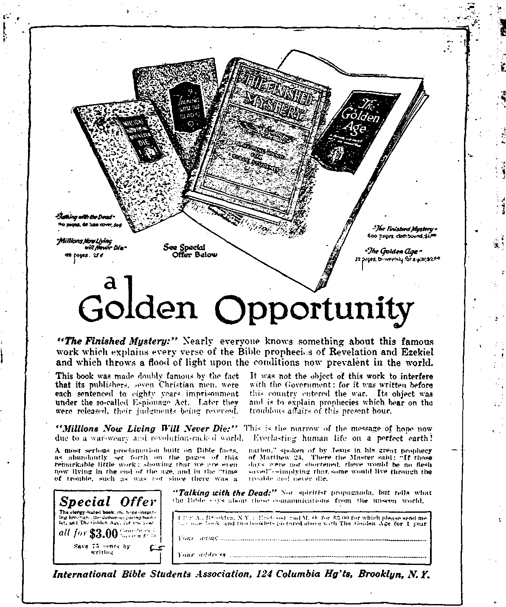

Oct 13, 1920, Vol. 2, No. 28
KSJB Publish cd etcrTf other If4®! >• rrk it t) Myrtle .4r<*nue, \£jP \'ric Tort City
Tea Centi a Copy —t2-M a Tear
Ciaad* an«l F'->n«r:n Countries, |2.3O
•4
j ; v.'ed.'.'USDAT, ocror:"n is, iirso N'cmber 2» -
COXl eiJM'IS or the GOLDEN AGE
POLITICAL, SOCIAL EDUCATIONAL, LABOB AND ECONOMICS
One "liv LA«t
Michigan’* School Amends't-9 Scant Difference Dtsc’nibla-10 I n te r na rio tutl A oarchy
Axe of Gold vs. Golden Age..13
Lift Cp the Standard..... 7...-1*
Enterine the Golden Aire—10
(toriw <>« Sl*mb end Pra* 3 Frmii» of Itelijriou......
MANUFACTURING AND MINING
Not Erwugh Gold-..............10. Protection Against Gtseg —IT
agriculture and husbandry
Horse Sense....... —...... 18 Plant Good Seed.-------
. b SCIENCE AND INVENTION
’’ A New Era.................. ...20 An Outdoor Refrigerator——20
HOUSEWIFERY AND HYGIENE
Lime aa a Remedy ...............21 Nerve and Strength-Bnilding
Save Flour and Money..........22 .Food ....... 42
. Mother of Thirty Children...J22
TRAVEL AND MISCELLANY
- Color and the Element.'*________23 The Seven-Pointed Star.—..24
Ho! Al! Te Taxpayers!........23
RELIGION AND PHILOSOPHY
Choose Life That Ye May
Live ...... .....25
ForuivaUle sml Cnpardoo-atde Sins...
In Dnys nt Fulfillment, Part L-..................
Christiana at War________
Pnbllibcd «v«ry otb«r Wedtmdar ** 33 Vyr-'«
Avenue. oi Siw N, Y„
by WOODWORTH. HUDGINGS aad MARTIN
CtAYTON J WOODWORTH . Editor ROBERT J MARTIN ... Bui:n«t> Muu« . F HVDGINGS .... S«c'y uai Tfm*
Coputnen uid prvcr.eton. -i Myrtle
Avenve, iPoro <ji HtMxlyn) ><w i uft. .M. Y.
Tax Ct NTS A Copy—v Ykais
Volume II New York. Wednesday, October 13, 1920 Number 28
One Reason Why America Lost Her Liberties
i first object should be to leave open to
xz the people all avenues of truth. The most ! effectual hitherto found is the freedom of the press.”—Thomas Jefferson, Third President of • the United States, 1801.
“We must now briefly consider liberty of speech and J liberty of the press. It is hardly necessar. to say that
I there can be no such right as this.”—Leo XlllJtine 20,
1888.
I “As long as our government is administered
( for the good of the people, and is regulated by
their will; as long as it assures to us the rights ( ' of person and property, liberty of conscience and of the press, it will be worth defending.”— 1 Andrew Jackson, Seventh President of the
United States, 1829.
• “The liberty of thinking and of publishing whatever
j each one likes, without any hindrance, is not in itself an
advantage over which society can wisely rejoice.”—Leo
, XIII. November 1, 1885.
“The spirit of resistance to government is so * valuable on certain occasions that I want it
always to be kept alive. It will often be exercised when wrong, but better so than not i exercised at all.”—Thomas Jefferson, Third
President of the United States, 1801.
“It is quite unlawful to demand, to defend, or to grant unconditional freedom of thought, of speech, of * writing or worship.”—Leo XIII, June 20, 1888.
“It is consoling and encouraging to realize that free speech, a free press, free thought, free ■. schools, the free and unmolested rights of relig
ious worship, and free and fair elections are dearer and more universally enjoyed today than ever before.”—William McKinley. Twenty-fifth President of the United States, 1897.
“The Roman Catholic is to wield his vote for the purpose of securing Catholic ascendancy in this country.
• AU legislation must be governed by the will of God.
unerringly indicated by the pope. Education must be controlled by Catholic authorities, and under education the opinions of the individual and the utterances of the
press are included, and many opinions are to be forbidden by the secular arm, under the authority of the church, even to war and bloodshed.”—Catholic World, July, 1870. . ‘
“Given a free press, we may defy open or insidious enemies of liberty. It instructs the public mind and animates the spirit of patriotism. Its loud voice suppresses everything which would raise itself against the public liberty, and its blasting rebuke causes incipient despotism to perish in the bud.”—Daniel Webster, American statesman, 1833.
“The Church has the right to practice the unconditional censure of books.”—Canon Law of the Roman Catholic Church.
“Freedom of speech is the only safety valve which, under high pressure, can preserve your political boiler from a fearful and fatal explosion.”—John Quincy Adams; Sixth President of the United States, 1825:
"Liberty of speech and press is the liberty of perdition.”— Pius IX. December 8,1864.
Fre.edom of Religion
ONGRESS shall make no law respecting an establishment of religion, or prohibiting
the free exercise thereof; or abridging the freedom of speech or of the press."—Constitution of the United States.
“Liberty of conscience is a most pestiferous error, from which arise revolution. corruption, contempt of -acred things, holy institutions and laws; in other words, that pest of all others most to be dreaded in a .State, unbridled libertv m opinion."—Pius IX.
“If there is anything in the Universe that cannot stand discussion, let it crack.”—Wendell Phillips, American statesman. 1837.
“It is an error to believe that every man is free to embrace and profess that religion which, guided by the light of reason, he shall consider true.”—Pius IX, December 8, 18G4.
“The immigrant must learn that we exact full religious toleration and the complete separation of church and state.”—Theodore Roosevelt, Twenty-sixth President of the United States, 1900.
“She has the right to require the state not to leave every man free to profess his own religion.”—Pius IX, December 8, 1864. .
“The adherents of each creed shall be given exact and equal justice.”—Theodore Roosevelt, Twentv-sixth President of the United States, , 1900. '
‘ “The state has not the right to leave every man free to profess and embrace whatever religion he shall deem true.”—Pius IX, December 8. 1864.
“Xo religious test shall ever be required as a qualification to any office of public trust finder the United States.”—Constitution of the United States.
“She has the right to require that the Catholic religion shall be the only religion of the state, to the exclusion of all others.”—Pius IX, December 8, 1864.
“It is consoling and encouraging to realize that the free and unmolested rights of religious worship ... are more universally enjoyed today ... than ever before."—William McKinley, Twentyfifth President of the United States, 1897.
“Religious liberty is merely endured until the opposite can be carried into effect without peril to the Catholic world.”—Bishop O'Connor. '
“Congress shall make no law 'respecting an establishment of religion, or prohibiting the free exercise thereof."—Constitution of the United States.
“Protestantism of every form has not had and never can have any right where Catholicity ha= triumphed, and therefore we lose th** breath wo spend in declaiming against bigotry and intolerance and in favor of religious liberty or of the right of any man to be of any religion as best pleases him'.”—Catholic Review. Julv. 1370. ‘
“The enumeration in the Constitution of certain rights shall not he construed to deny or disparage others retained by the people."— Constitution of the United States.
“There is. ere long, to be a state religion in this country, ami that -rare mligiou is to be Roman Catholic.”—Catholic WoC'l. Julv. 18;q.
OXGRESS shall make no law respecting VJ an establishment of religion.”—Constitution of the United States.
"It is an error that the Church ought to be separated from the State, and the State from the Church. . . . She has the right of perpetuating the union of church and state.”—Pius IX, December 8, 1864.
“We exact full religious toleration and the complete separation of church and state.”— Theodore Roosevelt, Twenty-sixth President of the United States, 1900.
“They have now crowned their evil work by the promulgation of a vicious and pernicious decree for the separation of Church and State. . . . We, by our Apostolic authority, denounce, condemn annd reject the law for the separation of Church and State'in the Portuguese Republic.”—Pius X, Hay 24, 1011. (Upon the tomb of this gentleman is the inscription, “Defender of Religion. He repudiated the law of separation of Church and State.”)
“Xo religious test shall ever be required as a qualification to any office of public trust under the United States.”—Constitution of the United States.
“Hence follows the fatal theory of the need of separation between Church and State. But the absurdity of such a position as manifest. ... It would be very erroneous to draw the conclusion that in America is to be sought the type of the most desirable status of the church, or that it would l>e universally lawful or expedient for State and Church to lie, as in America, dissevered and divorced.”—Leo XIII, November 1, 188.5 and January 6, 189.5.
“CpHE Congress shall have power to promote the progress of science.”—Constitution of the United States.
“The Church sometimes tolerates schools in which r ’igion i< not taught, and permits Catholic children to a*t;'i'.d them, when the circumstances are such as to l-ave no alternative, and when due precautions are taken to supply by other means the religious training which such schools do not give. She reserves the right to judge whether this be the case, and, if her judgment is unfavorable. claims the right to forbid attendance.”— Gregory XVI. January 16, 1831.
“It is consoling and encouraging to realize that : . . free schools . . . are more universally enjoyed today than ever before.”—William McKinley, Twenty-fifth President of the United States. 1897.
"Education outside the Catholic Church is damnable heresy. . . . The Catholic Church has the right to interfere in the discipline of the public schools and in the choice of the teachers for these schools. . . . The Church has the right to deprive the civil authorities of the entire government of the public school.”—Pius IX, December 8, 1864.
“The very reason that makes us unqualified in our opposition to state-aided sectarian schools makes us equally bent that in the management of our public schools, the adherents of each creed shall be given exact and equal justice.”— Theodore Roosevelt, Twenty-sixth President of the United States, 1900.
“‘The Royal Government shall remunerate the catechism teachers in the state schools. The office of parish priest is not incompatible with that of the catechism teacher.”—Concordat between the Vatican and Servia, signed June 24, 1914, the direct cause of the assassination at Sarajevo, June 28. 1914, and therefore of the World War.
"You wish ns to give you the people to instruct. Very well. Let us see your pupils. Let us see those you have produced. What have you done for Italy ’ What have you done for Spain! For centuries you have kept in your hands at your discretion, at your schools, these two great nations, illustrious among the illustrious. What have you done for them? I shall tell you. Thanks to you, Italy, mother of genius and of nations, which has spread over all the universe all the most brilliant marvels of poetry and the arts, Italy—which, has taught mankind to read—now knows not how to read.”—Victor Hugo.
“It is an error that the common'veal th is the origin and source of all rights, and possesses rights which are not circumscribed by anv limits.”—Pius IX, December 8, 1864. " '
Sovereignty of the People
“TXTE HOLD these truths to be self-evident, .W that all men are created equal, that they are endowed by their Creator with certain unalienable rights, that among these are life, liberty and the pursuit of happiness. That to secure these rights, Governments are instituted among men, deriving their .just powers from the consent of the governed, that whenever any form of government becomes destructive of these ends, it is the right of the people to alter or abolish it. and to institute now government, laying the foundation in such principles and organizing its powers in such form as to them shall seem most likdy to effect their safety and happiness." —Declaration of Independence.
“The sovereignty of the people . . . is held to reside in the multitude; which is doubtless a doctrine exceedingly well calculated to flatter and to inflame many passions, but which lacks all reasonable proof, anti all power of insuring public safety ami preserving order. ... In politics, which are inseparably bound up with the laws of morality and religious duties, men ought always, and in the first place, to serve, as far as possible, the interests of Catholicism. As soon as they are seen to be in danger, all differences should cease between Catholics.”—Leo XIII, November 1, 1885. (Repeated with slightly changed phraseology January 10, 1890, by the same person.)
"Our fathers brought forth on this continent a new nation, conceived in liberty, and dedicated to the proposition that all men are created equal.”—Abraham Lincoln, Sixteenth President of the United States. ’
“Undoubtedly it is the intention of the pope to possess this country. In this intention he is aided by the Jesuits and all the Catholic prelates and priests.”—The Catholic Review. .
“A history of repeated injuries and usurpations, all having in direct object the establishment of an absolute tyranny over these states.” —Declaration of Independence.
“The Church has in every age striven to direct. r the life of individual man only, but the collective lif3 of nations in their organized forms of republics, monarchies and empires.”—Cardinal Manning.
“We have warned them from time to time of attempts by their legislature to extend an unwarrantable jurisdiction over us.”—Declaration of Independence.
"We do not hesitate to affirm that in performing our duties as citizens, electors and public officers we should always and under all circumstances act simply as Roman Catholics.”—Catholic World.
“When a long train of abuses and usurpations, pursuing invariably the same object, evinces a design to reduce them under absolute despotism, it is their right, it is their duty, to throw off such government, and to provide new guards for their future security.”—Declaration of Independence. . •
•‘Within twenty years this country is going to rule th3 world. Kings and emperors will pass away, and die democracy of the United States will take their place. The Wot will dominate the country, and what I have seen of the We-tei u parochial schools has proved that the generation which follows us will be exclusive! v Catholic. When the I'nited State- rules the world the Catholic Church will rule the world. ... In I’rance and Port’igal the Catholic Church was defeated ami per-ecuted becau-e the Catholics were not organized. I want to -ay that when the time comes in thi.- country, as it wdl -urely come, ami the same forces attack the church here, they will not find us unprepared or unorganized and they -hall not prevail. We have well-ordered □nd efficient organizations, all at the beck and nod of the hierarchy, and ready to do what the Church authorities tell them to do."—Archbishop Quigley, Chicago.
“The history of the last thousand years tells i us that wherever the Church of Rome is not a dagger to pierce the bosom ot a tree nation, she is a stone to her neck and a ball to her feet, to h paralyze her and prevent her advancement in i the ways of civilization, science, intelligence, J happiness and liberty. Though not a prophet, I see a very dark cloud on our horizon. And that dark cloud is coming from Rome. It is filled with tears of blood. It will rise and increase till its flanks will be torn by a flash of ■ lightning, followed by a fearful peal of thunder. Then a cyclone, such as the world has never seen, will pass over this country, spreading ruin • and desolation from North and South. After it is over, there will be long days of peace and ' prosperity; for popery, with its Jesuits and - merciless Inquisition, will have been forever swept from our country.”—Abraham Lincoln, Sixteenth President of the United States, 1861.
“Both are in the power of the Church, namely, the spiritual .--word and the temporal sword; the latter is to be used for the Church, the former by the Church; the former by the hand of the priest, the latter by the hand of the princes and king's, but at the nod and sufferance I of the priest.”—Boniface VIII, 1302.
' “ TXT HER EVER " the Jesuits are admitted,
VV they will be masters, cost what it may. Their society is by nature dictatorial, and there-• fore it is the enemy of all constituted authority".
Every act, every crime, however atrocious, is a meritorious work, if it is committed for the interest of the Society of Jesuits, or by the order of the General of the Jesuits.”—Napoleon Bonaparte.
“The Pope has the right to give countries and nations which are non-Catholic to Catholic regents who can r.duce them to slavery. . . . The Pope can make slaves cf those Christian subjects whose prince or ruling power is interdicted by the Pope.”—Canon Law of the Roman Catholic Church.
“If the liberties of the American people are ever destroyed, they will fall by the hands of the Romish clergy.”—Marquis de Lafayette.
“The punishments indicted by the Church in the exercise of her coercive authority, are chiefly spiritual; e. g., excommunication, suspension and interdict. We say chiefly; for the Church can indict temporal and even corporal punishments. Has the Church power to inflict the penalty of death? Cardinal Tarquini thus answers: 1. Inferior ecclesiastics are forbidden, though only by ecclesiastical law, to exercise this power directly. 2. It is certain that the Pope and (Ecumenical Councils have this power, at least mediately; that is, they can, if the necessity of the Church demands, require a Catholic ruler to impose this penalty. That they can not directly exercise this power can not be proved.”—Dr. Sebastian Smith in “Elements of Ecclesiastical Law'’.
“Interwoven as is the love of liberty with every ligament of your hearts, no recommendation of mine is necessary to fortify or confirm the attachment.”—Farewell Address of George Washington, First President of United States.
“No good government can exist without religion, and there can be no religion without an Inquisition, which is wisely designed for the promotion and protection of the true faith.”—Cardinal O’Connell’s Boston Pilot.
“Let there be no change by usurpation: for though this, in one instance, may be the instrument of good, it is the customary weapon by which free governments are destroyed.”—Farewell address of George Washington, First President of the United States.
“The pope and priests ought to have the dominion over the temporal affairs.”—Encyclical XXVII.
“Neither slavery nor involuntary servitude, except as a punishment for crime whereof the party shall have been duly convicted, shall exist within the United States, or any place subject to their jurisdiction.” — Constitution of the United States.
“The Church is empowered to grant, or to take away, any temporal possessions.”—Canon Law of the Roman Catholic Church.
“No state shall make or enforce any law which shall abridge the privileges or immunities of citizens of the United States: nor shall any state deprive any person of life, liberty or property without due process of law, nor deny to any person within its jurisdiction the equal protection of the laws.”—Constitution of the United States.
“Outside of the papal states, I am pope in none but the United States of America.”—Gregory XVI, 1832.
Freedom from Tyrants
“ AGAINST the insidious wiles of foreign ■UX. influence, I conjure you to believe me. fellow-citizens, the jealousy of a fret* people ought constantly to awake: since history and experience prove that foreign influence is one of the most baneful foes of republican government.”— Farewell Address of George, Washington, First President of the United States.
"The Pope is the supreme judge of the law of the land."—Pius IX, March 18, 1871.
“A prince, whose character is thus marked by every act which may detine a tyrant, is unfit to be a ruler of a free people.”—Declaration of Independence.
"As regards opinion, whatever the Roman pontiffs have hitherto taught, or shall hereafter teach, must be held with a firm grasp of mind and, so often as occasion requires, must be openly professed. Especially with reference to the so-called ‘liberties’ which are <o greatly coveted in these days, all mint stand by the judgment of the Apostolic See, and have the same mind. ... In very truth Jesus Christ gave to his apostles unrestrained authority in regard to things sacred, together with the genuine and most true power of making laws, as also with the two-fold right of judging and punishing, which flow from that power. ... In addition to the complete accordance of thought and deed, the faithful should imitate the practical political wisdom of the ecclcsias-tical authority. . . . The man who has embraced the Christian faith, as in duty bound, is by that very fact a subject of the Church . . . which it is the special charge of the Roman Pontiff to rule with supreme power. . . . We hold upon this earth the place of God Almighty.”—Leo XIII, November 1, 1885, January 10, 1890 and June ?0, 1894.
‘■’The independence and liberty you possess are the work of joint counsels and joint efforts.” —Farewell address of George Washington, First President of the United States.
“I acknowledge no civil power; I am the subject of no prince; I claim more than this—I claim to be the supreme judge and director of the consciences of men— of the peasant that tills the field, and of the prince that sits upon the throne; of the household of privacy. and the legislator that makes laws for kingdoms; I am the sole, last, supreme judge of what is right and wrong. . . . There is no tribunal to which appeal from the Church can lie. There is no coordinate w itness, teacher or judge who can revise, or criticise or test the teaching of the Church. It is sole and alone in the world. It Ivelongs to the Church to determine the limits of its own infallibility.'’—Cardinal Manning, speaking for tic pop? and the church.
"As long as our goveriiiuent is administered for the good of the people, and is regulated by their will, it will be worth defending.”—Andrew Jackson. Seventh [’resident of the United States, 1S29.
"Catholics know well the Pope's -overeignty.”— Tnl'i t. J.iJv s. 1 'iji;,
"A history of repeated injuries and usurpations, all having in direct object the establishment of an absolute tyranny over these states.” —Declaration of Independence.
--------------------------------------------------------------------------------------
‘‘The man who says ‘I will take my faith from Peter, but I will not take my politics from Peter,’ is not a truo Catholic.”—Monsignor Preston, New York, January 1, 1888.
“We have warned them from time to time of attempts by their legislature to extend an unwarrantable jurisdiction over us.”—Declara-tion of Independence.
"Even therefore, where the judgments of the Pope do not present the credentials of Infallibility, they are unappealable and irreversible: no person may pass judgment upon them; and all men. clerical and lay, dispers-edly or in the aggregate, are bound truly fo obey them.” William Ewart Gladstone, Premier of Great Britain, 1875. ' -
“When a long train of abuses and usurpations, pursuing invariably the same object, evinces a design to reduce them under absolute despotism, it is their right, it is their duty, to throw off such government, and to provide new guards for their future security.”—Declaration ’of Independence. .
“It must be borne in mind that even though Cardinals Farley, O’Connell and Gibbons are at heart patriotic . Americans and members of an American hierarchy, yet -they are as cardinals foreign princes of the blood, to whom the United States, as one of the great powers of the world, is under obligations to concede the same honors that they receive abroad. Thus, were Cardinal Farley to visit an American man-of-war, he would be entitled to the salutes and to naval honors reserved for a foreign royal personage, and at any official entertainment at Washington the Cardinal will outrank not merely every cabinet officer, the speaker of the house and the vice-president, but also the foreign ambassadors, coming immediately next to the chief magistrate himself.”—Cardinal O’Connell’s Boston Pilot, April 6. 1012.
“The adherents of each creed shall he given exact and equal justice.”—Theodore Roosevelt, Twenty-sixth President of the United States, 1900.
“Cardinals are the immediate counsellors or advisors r.f the Pope, and form, so to speak, the senate of the P nan Church.”—John Sebastian Smith in “Elements < t Ecclesiastical Law”. ’
Respect for American Laws
Hh'. HAS refused his assent to laws, the most wholesome and necessary for the public good.”—Declaration of Independence,
“It has not the riuht m enact that the ecclesiastical power shall require the permission of the civil power in order to the exer< i<e of its authority. . . . She has th?' risrht to exercise her power without the permission or consent of the civil government. ... It is an error to hold that in the case of conflicting laws Ixtween two
it
powers the civil law ought to prevail."—Pins IX, De~ * erm her 8. 1864.
_ 'The Congress shall have power to exercise exclusive legislation in all cases whatsoever over t sv.rh district.”—Constitution of United States, f • "The Church has a right to exercise its authority without any limits set to it by the civil power;’’— Encyclical XIX.
"Submit yourselves to every ordinance of man I for the Lord’s sake: whether it he unto the king f as supreme." (1 Peter .2: 13) "Render unto
Ca'sar the things that are Catsar’s.”
t "Jul human power is from evil and nm.-r therefore
F be sunding under the Pope.’’—Canon Law of the Bonnin Catholic Church.
4 "For rulers are not a terror to good works but
f to the evil."—Romans 13:3.
J "There are, nevertheless. occasions when another
method of concord is available for the sake of peace and liberty: We mean when rulers of the State ami the . Roman Pontiff come to an understanding touching some .
‘Special matter. At sinh rime- the Church gives signal proof of her mother!v love bv showin" the greatest possible kindliness and indulgence."—Leo XIII, November 1. ISS5.
‘’The Congress shall have power to lay and collect taxes, duties, imposes and excises.”— f Constitution of the United States.
, • “Without the consent of the Pope no tax. or rate of any kind, can be levied upon a eler.2p.-n»an. or upon any
1 church whatsoever.”—Canon Law of the Roman Cath-olio Church.
"Let every soul be subject unto the higher powers"—“unto the king as supreme.”—Romans 13:1: 1 Peter 2: 13.
"As the end at which the Church aims i- by far the i noblest of ends, so j,- its authority the most exalted of
|» all authority, nor can it bo looked upon as inferior to
the civil power, or in any manner dependent upon it. ... It is an impious deed to break the laws of-.Ie-us Christ for the purpose of obeving the magistrates, or to ! transgress the lair of the Church under the pretext of observing the civil law. ... If the laws of the state are manife-tly at variance with the divine law. coutain-• , ing enactments hurtful to the church ... to resi-t becomes a positive duty, to obev. a crime.” — Leo XIII. No.. tuber I. Iss.t and .Tanuarv lo.. is'm.
“Whosoever therefore resisteth the Fpagan civil] power, resisteth the ordinance of God: and they that resist shall receive to themselves damnation."-—Romans 13: 2.
1 “The pope can release from every obligation, oath or vow. either before or after being made.”—('anon Law of the Roman Catholic Church.
“Before he enter on the execution of his office
<
he shall take -the following oath or affirmation: ‘I do solemnly swear (or affirm) that I will faithfully execute the office of President of the United States, and will, to the best of my ability, preserve, protect, and defend the Constitution of the United States'.”—Constitution of the United States.
“The Pope has the right to annul State laws, treaties, con.-titutions. etc., to absolve from obedience thereto, as soon as they seem’detrimental to the rights of th» Church, or those oi’ rue clergy.”—Canon Law of th' Roman Catholic Church.
“For suspending our own legislatures, and declaring themeelves invested with power to legislate for us in all cases whatsoever.”— Declaration of Independence.
“All Cathoiks must make .themselves felt as active element’ in dnilv nc'iti nl !if? in the Countries where they live. They must penetrate, wherever possible, in the administration of eivtl affairs. . . . AH Catholics should do all in their power to cause the constitutions of states anil legi.-latiou to be modeled on the principle® of the true Church.”—Leo XIII. November 1, 1885.
"For taking away our charter.", abolishing our most valuable laws, and altering fundamentally the forms of our government.”—Declaration of Independence.
“Tell us that we think more of the Chnrc-h than we do of the United states; of course we do. Tell ns we are Catholics first and Americans or Englishmen afterwards; of course we are. Tell us in the conflict between the Chunk and the civil government we take the side of the Church ; of courw we do. Why. if the government of the United Stat s wore at war with the Church we would say. tomorrow. 'To hell with the Government of the United Stat- -’; and if the Church and ail the governments of the world were at war wo would ®ay. 'To hell with all the government® of the' world'."—llott-S'-igneur D. S. Phelan. St. Louis. Mo.. .Tune 30. 1012.
“And they worshipped the beast, saying, Who is like unto the beast? Who is able to make war with him.’ And there was given unto him a mouth speaking great things and blasphemies.” —Revelation 13:4. 5.
“As experience teache®. conflicts may arise between Church ami State. Now, in any question, as to the competence of the two powers, either there must bo some judge to decide what doe® and what doe® not fall within their re-peitive -phere-. or they are delivered over to perpetual doubt .ami perpetual eontlii t. But who can define what is or i® not within the jurisdiction of the church in faith and morals, except a judge who knows w hat the sphere of faith and morals contains and how far it extends? It is clear that the civil power can not define how far the circumference of faith and morals
extends. To do this it- must know the whole 'deposit of - explicit and implicit faith. Therefore, the Church alone can fix the limits of its jurisdiction; and if it can fix the limits of its own jurisdiction, it can fix the limits of all other jurisdictions.”—Dr. Sebastian Smith, ‘’Elements of Ecclesiastical Law”.
• "That day shall not come, except there come • a falling away first, and that Man of Sin be revealed, the son of perdition; who opposeth and exalteth himself above all that is called God. or that is worshipped; so that he as God sitteth
• in the temple .of God, showing himself that he is God.”—2 Thessalonians 2: 3, 4.
“The Church ha- a right to immunity from civil law.” —Encyclical XXX.
“Submit yourselves to every ordinance of man for the Lord’s sake.”—1 Peter 2; 13.
“"While a State has rights, she has them only in virtue and by' permission of the superior authority, and that authority’ can only be expressed through the Church.” —Catholic Reiietr, July. 1870.
“Unto the king as supreme.”—2 Peter 2; 13.
“In case of conflict between the ecclesiastical and civil powers, the ecclesiastical powers ought to prevail." —Encyclical XLII.
“Submit yourselves unto governors, as miro them that are sent by him for the punishment of evildoers.”—1 Peter 2:13, 14.
“It is therefore de fide that t'.ie Church, an! th’r.’f >r.' the Pope, has ii direct power over the State; and that, consequently, the Stat', in temporal things that iiivolv-' sin. is sub]set to the. Church. Thia indirect power of the Church mor the State is inherent in th' divir.’1 constitution and commission of the Church.”—T’r. Seba.tian B. Smith, in “Eler.-.-nts of I?. Ie ria ti l.nw.”
“Let none of you suffer as a busybody in other men's matters."—1 Peter 4: 15.
“It is an error that divorce, properly so-cdll. d. may be pronounced by the civil authority."—Pius IX.
"Study to lie quiet and to do your own business.”—1 Thessalonians 4: 11.
“Only those marriages are valid which are contracted before the parish priest or the Ordinary of the place nr a priest delegated by either of these."—Pius X. 1907.
“Wise statesmen as they were, they knew the tendency of prosperity to breed tyrants, and so [they so planned our Constitution] . . . that truth, ami justice and mercy, and all the humane and Christian virtues might not be extinguished from the land: so that no man would hereafter dare to limit and circumscribe the great principles on which the temple of liberty was being built."—Abraham Lincoln, Sixteenth President of the United States.
“Cold is a wonderful thing. By means of gold we can even get souls into l’aradi.-e."—Christopher Columbus, Jamaica, 1503.
“We here highly resolve that these dead shall not have died in vain—that this nation, under God, shall have a new birth of freedom—and that government of the people, by the people, for the people, shall not perish from the earth.” —Abraham Lincoln, Sixteenth President of the United States.
“The Church is empowered to grant, or to take away, any temporal possessions.”—Canon Law of the Roman Catholic Church.
"Is life so dear, or peace so sweet, as to be purchased at the price of chains and slavery? Forbid it. Almighty God! I know not what course others may take; but as for me, give me liberty, or give me death.”—Patrick Henry, American Statesman. March 23. 1775.
Michigan*» School Amendment
THE Wayne County Civic Association, 228
Broadway Market Building, Detroit, Michigan, is trying to get an amendment before the voters of Michigan requiring that “All residents of the state of Michigan between the ages of. five years and sixteen years shall attend the public school in tl: .ir respective districts until they have graduated from the eighth grade: provided, that in districts where the grades do not reach the eighth, then all persons herein described in such district shall complete the course taught therein”.
The fundamental proposition underlying the United States government, and the government of all the states, is complete religious liberty, which can be obtained only by an entire separation of the functions of church and state. With over one hundred and sixty different religious organizations in the United States, including Greek and Roman Catholics, Protestants of all shades, .Tews, Freethinkers, Spiritists, etc., it is manifestly unjust that the state should favor one of these at the expense of the others.
It is the function of the state to educate its citizens so that they may perform the functions of citizenship. It is the duty of the state to teach its citizens, all of them of school age. the elementary principles of spelling, composition, penmanship, reading, grammar, geography, arithmetic, history, civics, hygiene, and industrial art. The children should stitdy these subjects together, Ijeeanse they will be thrown together in later life and will have common need oi thi.s i»formation. The proper place to teach religion is in the home or, if so preferred, by religious teachers, in places appointed; and with that the state should have nothing to do.
The argument that a school is godless because - it does not teach religion is pure nonsense. The question of godliness does not ent&r into spelling, composition, penmanship, reading, grammar, geography, arithmetic, history, civics, hygiene or industrial art, and the attempt to inject either Bible or beads into the matter is hypocritical and against the real interests of the state.
When a child is made to believe that he cannot be taught the foregoing subjects because of somebody's religion or lack of religion, there is then and there raised in his mind the hateful thought that his religion is incompatible with the institutions upon which the republic must depend for its continued existence, i. e., the education of its citizens: and the natural result is the great disgrace witnessed during the World War where American soldiers, born in America, had to be sent to army schools to learn the language of their own country.
The truth of the matter is that an autocratic and liberty-hating church bodes no good to a liberty-loving land. The two can not get along together. The one will surely destroy the other. Hence it is not strange that in Michigan we find the Wayne County Civic Association hoeing an uphill row in its effort to get this amendment before the people. The newspapers refuse even paid advertisements, so afraid are they of the dreaded boycott; and so the work of tearing down the American school system goes on apace at the same time that noble-minded men and women are trying to build it up.
Scant Difference Discernible
THE difference between the Democratic and Republican platforms ami parties in the coming election may be discerned—through a microscope. The candidate for President on the Republican ticket voted for all the measures that have made the thinking men and women of the Tinted States so dissatisfied with the Democratic administration.
His congressional record shows that he practically approved the Hog Island steal: that he voted for war and for the bill prohibiting freedom of conscience, sometimes known as the espionage bill; that he was a strong advocate of the compulsory draft law and for the return of the railroads, which he knew would result in increased freight rates and billions of dollars of extra expense to the rank and file consumer.
' He favored the new army bill, which passed the Senate April twentieth, calling for 300,000 men and $600,000,000 annually, empowering the whim of a president to mobilize the country and thus creating in a peaceful country a military machine exceeding in size the pre-war German military machine which was crushed at an expense that has ruined the world for a hundred years to come. .
He is in favor of the Paris “Peace” League of Nations which The Golden Age has described at length in its issue of July".the same League now bestowing its benevolent smile upon the thirty wars being waged in various parts of the earth. He is in favor of intervention in Mexico, which, if it takes place, will lie another crime against civilization, as abundantly proven in The Golden Age for August 4 and August 18.
He has done nothing to indicate that he is in favor of the general amnesty which has been granted by all the other warring powers; and his connection with.the press, which has been responsible for the greatest flood of falsehoods and progaganda ever known, is enough to make every person wonder how anything could be gained by placing him in the great office to which he aspires, and for which the Wall Street interests have selected him. .
International Anarchy By xcirton r. Hartuhori
AN it not be truthfully said that international anarchy has prevailed since the fall of
the Roman Empire.’. •
We have had so-called international laws; but have they not. with the treaties, been mere "scraps of paper”— "gentlemen's agreements,” broken at willAre we not now drifting into rational as well as international world-wide anarchy.’
All of the great empires of the world— Assyrian. Persian. Macedonian and Roman— wvre political aggregations loosely bound together and dominating the world only in a military sense.
For the first time in the history of the world, within the past 45 years, its many economic units have fused into one great unit, by spontaneous action and not by military force. This unity is unprecedented, and out of it has grown the ideal of internationalism, the forerunner of complete world union; and ambitious imperialists in Germany and England, seeing the great prize—world empire and world trade— prepared for the titanic struggle to win it And English imperialists think they won.
The unifying of finance also has been progressing until international bankers now dominate the financial world, the League of Nations Covenant being the instrument by which they ** expect to unify the world, forming the fifth world empire, based on the British Church and State System—the British Empire aiming to take in the whole world, unified in religion as well as politics and economics. For the first time in the history of the world, military and naval power, political, economic and religious power are completely- united under one head.
This clearly is the purpose that animates millions of the most prominent and influential i, people of the world, who through the press and C the pulpit shape public opinion, though they declare their aim cautiously, in diplomatic language, gradually educating people up to their objective.
Their urgent appeal for the conservation of peace and civilization through the League of i. Nations Covenant, and other features of their L propaganda when examined, disclose their real F object to be the formation of an empire com-:j pletely dominating the world.
After the rebellion of the Southern slave-! holders in the United States had failed. English imperialists, who had expected that the American Union would be broken up and the states absorbed into the British Empire, began to conclude that the empire would be split up into several nations, like the United States. Gladstone favored this idea; but when he (iied, the old idea of British imperialists again became ascendant, and the propaganda to lay the foundation of a great federation, so-called, of the United States and the British Colonies with the * mother country began more definitely to shape. German imperialists were at the same time pushing their propaganda here to defeat the aims of the British.
* As before stated, in economies and finance the world has become unified, and German opposition to the plan of British and American imperialists has become practically eliminated.
This explains why the unprecedentedly destruct tive terms of the peace treaty were imposed on Germany to force her to acquiesce. Those terms will be modified whenever Germany consents to become a part of the British Empire, and not before.
All the spoils of the war have passed into the hands of England—vast colonies and the trade of the world. Here, then, we have the factors of world-wide revolution and anarchy unprecedented in extent and intensity.
In comparison with the proposed world-wide British Empire, the Roman Empire was only a babe in swaddling clothes. But that world empire is not yet formed sufficiently to act in open self defense. The Senate of the United States has for the tune being halted the plans of the English and American imperialists. This leaves the international world in a state of inci-, pient anarchy. The League cannot function without the power, prestige and money of the United States. Europe is bankrupt and.starving. Russia is in-the hands of the proletariat, who is bitterly opposed to imperialism.
The whole world is shot through, so to speak, with organizations radically opposed to each other. In England, the nucleus on which it is proposed to build this great world empire, 90 percent of the working people are unionized and are class conscious. Their interests are diametrically opposed to the aristocratic element which controls the British government; and the scheme of- the British imperialists to dominate the world is repugnant to the English working men.
Their discontent is based on conditions that are fundamentally unjust; and while before the law technically they have.equality of rigU. in fact their rights are disregarded. Instead of the present agitation quieting down it Ifia.-t increase and intensify. The repugnance in England to the assumptions of title and privilege is increasing, and not only there but all over the world. The psychology of title is beginning to operate against, instead of in favor of the holder. While the war in the interest of imperialism was fought in the name of democracy and self-determination, democracy and self-determination propose to have some of the game as well as the name. The people are tired of political hypocrisy or any other kind.
England and the United States are the main powers in the proposed Empire. England, the
dominant power, is in both name and fact a i monarchy and an empire as well as an aristocracy: and those who speak of her as a democracy know that it is a lie—bald hypocrisy, spoken to deceive the thoughtless.
■ The pressure to taxation resulting from the expenditure of more than one hundred billions of money and a score of millions of lives, directly and indirectly, in the criminal war between
■ English and German imperialists for world
i dominion and world trade—the pressure of this
i unprecedented burden of sorrow and taxation । . laid with autocratic assumption upon the hearts 1 and backs of the people, without consulting them, is yet to find expression in the resentment k of those people. We have an illustration of this
I in Russia. '
’ Men are thinking as never before. “As ye sow, so shall ye reap.” The law of cause and effect is inexorable. “The mills of the gods grind slowly, but they grind exceeding fine.” j Year by year the crushing effect of this taxation will burn itself into the brain of the '( common people, however stupid and thoughtless they may be. On their backs will automatically be shifted the taxes that wealth ought to pay.
•[ The necessities of the people will have to bear - the tax. If hit hard enough in the stomach the
t blow reaches the brain, as in the case of the
starving woman who started the French Revolu-
•, tion by beating a tin pan and crying, “Bread! bread!”
Talk of stopping profiteering! All the business men and manufacturers in America and J Europe are thoroughly organized. All of the ? necessities of the people pass through their hands. The law of supply and demand no i longer operates: prices are fixed by these organizations which are stronger than the government. They take toll on the necessities for their own support, be it little or much, according to their extravagant living. They pay the producer of the raw material as little as he can be squeezed to accept and get from the consumer as much as they can squeeze out of him. The consumers, the common people (those belonging to those associations get discounts), must take . what is left and pay the price or go without.
The working people have organized their unions for defense. Only 15 per cent of them, . however, are organized in the United States.
The crushing taxation shifted down,down,down until it lands on the backs of the unorganized masses, will drive them into the unions. "Tlffi devil take the hindmost.”
Is this not a state of anarchy? Show me any . cohesion in the world if you can; except the cohesion of antagonism.
Besides these organizations there are some X fifty smaller ones, to say nothing of the two great political parties, ostensibly pitted against each other by shrewd politicians who. fog the issues and cancel the voting power of the people to prevent them from getting control or getting anywhere except into the camp of the profiteers or the imperialists. - •' - /
We have the Elks and the Moose, the Knights of Columbus, the Free Masons, and the Orange- ' men, etc., etc., all pulling at cross purposes.
Then in the religious world we have scores of ; denominations all teaching diverse doctrines, spme of them antagonistic in spirit—Roman Catholics and Protestants, Anglicans and Lu- ; therans, all a jangle of confusion and anarchy—> religious chaos.
The $100,000,000,000 and the vast labor worse than thrown away in the World War would have produced marvellous results for good if expended on improvements sadly needed by the * human race. But less than a score of men at the head, in their lust for world empire, plunged the nations into the maelstrom of hate and murder; and still almost the same few of the victors are planning another deal in their lust for empire, which cannot fail to drag what is left of the human race still deeper into a debacle of hate, murder, starvation and agony.
Do you say this picture is overdrawn—pessimistic? Possibly you may conclude later that in reality it is relatively optimistic. .
Jesus no doubt referred to these times in His forecast (Matthew 24: 21. 22): “Fox- then shall be great tribulation such as was not since the beginning of the world [the present era of .~o-called civilization] to this time, no. nor ever shall be: and except those days should be shortened there should be no flesh be saved”.
Jesus went on to say that those days would he shortened—evidently by the coming of the kingdom of heaven for which He taught His disciples to pray. This, instead of the British world empire, would be established and rule in all the earth, when peace, justice and love would (Concluded on page 13)
u ; The Golden Age far October 53, 1920
£ ' 1 ■' ■■ ' - - "' — ______ -■ ■ . _ -■-■-r.Jir._L .. . " - - ■ — "
Age of Gold vs. Golden Age:
Tiyr Editor:—In view of your very interest-1V1 ing article in a recent number of The Golden Age, entitled, “How to Profiteer,” I am sending reference to a few Scriptures recently ' called to my attention. The deplorable conditions caused by “profiteering” have brought much suffering to many; but these Scriptures f may bring a ray of comfort to some sad hearts, and’ inspire the hope that soon these conditions •will change, when the Lord takes control of jt earth's affairs.
Some rich profiteers are referred to in a parable (Luke 12:16-20) as a “rich man”, i. “And he said. Soul, thou hast much goods laid
I un for many years: take thine ease, eat. drink,
5 and tie merry.” “But God said unto him, Thou fool, this night [during the dark night of the ? time of trouble] shall thy soul be required of 1 thee; then whose shall those things be which thou hast provided
, The Lord does not tell us in this parable
r whose they shall be, and evidently the rich man did not know; for the Prophet David says . (Psalm 39:6): "He heapeth up riches, and ? knnweth not who shall gather them”.
Job also w?.s a nronhet of thzi Lord: and he tells us something about it. (Job 27:13-17) t 1 “This is the portion of a wicked man with God, ■ and the heritage of oppressors, which they shall receive of the Almighty .... Though he heap up silver as the dust, ami prepare raiment as f the clay, he may prepare it. but the y’n.-t shall
- put it on. and the innocent shall divide the $ silver.”
, Solomon, another prophet of the Lord, has a
*s , word to say concerning this same subject.
(Proverbs 13: 22) "The wealth <>f the-sinnor is laid up for the just.” Also Proverbs 28:8: “He ’f" that by usury and unjust gain increaseth his substance, he shall gather it for him that wdl pity the poor.”
■ The Prophet Joel tells us who it is rhtit will 1 pity the poor. (Joel 2:18. I!)) "Then will the * Lord be jealous for his land, and pity his people. Behold. I will send you corn ami wine , and oil, and ve shall be satisfied therewith: and
I will no more make- you a reproach among the A heathen.” The Apostle James tells ns (James 5:11): “Ye have heard of the patience of Job, and have seen the end of the Lord, that the Lord is very pitiful and of tender mercy”.
By L. Smith •
James also tells as of a class Iieing chosen of the Lord to assist in bringing these blessings, to the world. (James 2: 5) “Hearken, my beloved brethren. Hath not God chosen the poor of this world, rich in faith, heirs of the kingdom which he hath promised to them that love him?”
These are the saints, poor despised ones who, during this gospel age have walked in the footsteps of Jesus, the meek and lowly One, in the narrow way of self-sacrifice, and who will, with their Lord, as a merciful and faithful High Priest, have the privilege of assisting the world in walking up the highway of holiness in the Golden Age, mentioned by Isaiah in Chapter 35.
So, seeing from the Lord's Word, that the masses of mankind are soon to reap the benefit of those riches which are now being piled up by the profiteers, let none envy- them, but wait with patience until the Lord shall take control of earth's affairs and rule for the blessing of all the willing and obedient. Let us observe also from the Lord's Word that proper principles of justice will operate in the dispensing of the kingdom blessings.
The Psalmist says (Psalm 103:13): “Take as a father pitieth his children, so the Lord pitieth th m that re eren.ee him.” Also Ecclesiastes 2.: 26: "For God giveth to a man that is good in his sight, wisdom, and knowledge and joy: but to th? sinner he giveth travail, to gather and to h“i!j iu>. that he inay give to him that is good h^fori' God.”
This is the “Age of Gold” for a few, but the next will be the “Golden Age” for all.
from pane 12i prevail instea I of war, confusion, starvation and hate. ■ '
The miracles of modern scientific attainment foreshadow, and the Word of God proclaims that when this old evil civilization (world) controlled by Satan perishes through its own inherent evil a new and really true civilization (world) will rise out of the ashes of the old not by supernatural, but by natural means, gradually developing into a paradise more glorious than man ever dreamed Heaven to be—a restored Eden, the earthly phase of the invisible, heavenly kingdom, ruled by Christ the invisible Ruler of all the new world instead of Satan, who now is the invisible ruler of this old evil civilization.
f ITr. Editor! I would commend your honesty. 1VJ. I could wish that your magazine might become a great journalistic mountain and fill the entire void or sphere of a lying, money-led press, doing flunky business to outworn interests derogatory to the good of mankind and doomed to pass away.
The articles dealing with the subjects—What is Anarchy, The Negro Race, and The League of Nations—are examples of honesty and truthfulness, seldom seen in any publication. Self-interest, .pride, fear, dishonesty, stain the management of them all with rare exceptions, as we ! perceive. The contrast is most unfavorable to 1 the “kept press”.
Few journals are ready to point out that mob I violence, wherein thousands are seized with a
I desire to lynch a wrong-doer, is anarchy. Few
will admit that any violation of established law j is anarchy.
■ Few are ready to accord the Negroes their
natural and legal rights or to concede that all nations are of one blood, made to dwell in peace.
[The discussion of The League of Nations is along the same line of open facts, “openly
1 arrived at”.
I The President’s position has always been
J untenable. His bold departure in leaving his office and assuming the entire world burden in disregard of the people’s law-makers; his visit to the Pope of Rome in disregard of Protestant * principles, to say nothing of respectable pride, has placed the President in an unenviable posi-‘ tion. How different his course at Rome from that 1 of Mr. Roosevelt, who held his Protestant nose high above the Vatican, and preserved the Protestant principles and traditions of freedom , of speech and. action. No kissing of the Pope’s foot for him; though Mr. Wilson, out of respect for the Pope’s enmity to the King of Italy, obeyed “Benedict’s orders” to drive from the ’ king’s palace to "the American embassy first, and then drive to the Vatican". The President's course not only brought upon him the combined opposition of the people, as shown in the election of a Republican Congress to cross Wilson’s way, but doubtless divine providence overruled in the entire matter. The nation that patronizes Rome is on troublous ground: and the man who courts Rome’s favor finds less and less of the favor of God. At every turn the President has met a bear, with troubles from coast to coast— troubles in his own party and outside of it.
The stormy career of the League and the \ President’s efforts to make peace suggest many Scriptures: “He taketh the wise in their own craftiness”. “He disappointeth the devices of the crafty, so that their hands cannot perform their bidding.”—Job 5:13, 12.
It is lamentable, and a sure sign of decay, when for political prestige rulers ‘ pander to Rome and surrender a people’s liberties to the worst enemy of all liberty. No wonder-the Lord has confused and confounded the operators of such baseless procedure and set at naught their operations as the work of mice!
Here in the Peace Conference were the leaders of the leading nations—“the big four” of the world. Here the great state churches of Europe were represented.
The President is a member of one of the leading Protestant sects and said to be an honorary member of the Knights of Columbus. The best of every system was represented by the President, yet “God was not in all their thoughts”.
In contrast to this Godless procedure please note the following from Washington’s Inaugural address, 1789:
“It would be peculiarly improper to omit in this first official act my fervent supplications to that Almighty Being who rules over the universe, who presides in the councils of nations, and whose providential aids can supply every human defect, that His benediction may consecrate to the liberties and happiness of the people of the United States a government instituted by themselves for these essential purposes; and may enable every instrument employed in the administration to exeettfe-wfth success the functions allotted to its charge. In tendering this homage to the Great Author of every public and private good, I assure myself that it expresses your sentiments not less that my own. nor those of my fellow-citizens less than either. No people can be bound, to acknowledge and adore the invisible Hand which conducts the affairs of men more than the people of the United States. Every .tep by which they have advanced 4 to the character of an independent nation seems to have been distinguished by -ome token of Providential agency, and in the system of their united government the tranquil deliberations and voluntary consent of so many distinct communities from which the event has resulted, cannot be compared with the means by which most governments have been established without some return
of pious gratitude, along with an humble anticipation 'of the future blessing which the past seems to presage.” < At this early day Rome had not poisoned the American ideals of religion and liberty. Her
* destructive influence had not spread. But the great French general, Lafayette, feared it and remarked that if the liberties of'America were ever destroyed it would be at the hands of Rome!
The world’s hope Is not in any league of nations. It is said that thirty w-ars are now in : progress, and the League is powerless to sup-
I press them. It makes no effort to do so.
Blind leaders have led the world into a ditch, : and there it must learn its lessons. In a dark
L night when no man can work, when every man’s ] > hand will be against his neighbor, as the Scrip-
i tures declare, then man’s extremity in the last
i ditch will become God’s opportunity, and in His
I own way He will exalt Himself among the heathen, worldwide.
* f > 5"r. Editor:—I am appreciating the “idea” .W-L of the Golden Age. Surely the long-looked-fcr evidences are all about us; and I wish to cc:’.grctul?.to you f.i the foresightodness dis* p!"id in putting the “idea-’ into concrete form and giving it out to the people. I am very 7 much impressed with the effect of your efforts to connect the various happenings throughout the world with the change of the dispensation now at hand.
T am employed in a large railroad shop, ' w' ?ro gu’to a number of the workers are readers of T:ir. C'LrEN Age; and the me.’-age it brings ir. "ire." them to look for better thing? just ak?r.fl. Keep up the good work! I ■wish the Golden Age Magazine had access to every home in the world. Absolutely all men ere looking for a change to come, and soon. If the "idea” of the Golden Age can lie thoroughly impressed, it will go a long way toward preparation for the incoming blessings.
• Nowhere does the evidence that we are in the day of ■visitation” show quite so plainly to us as it does from the illumination of the hith-. erto dark sayings of our Lord and H's apostles, as well as the prophets. In the light shining from the pages of the Golden Age Magazine, many of those perplexing sayings recorded in the Bible are becoming reasonable, really believable! And if it is true, as the Good Book says, that the light is to shine more and more unto the "perfect day”, then if light is flooding and illuminating the things that have never been understood, to my mind it is indisputable proof that we are entering the real Golden Age.
Then take those hitherto mysterious, unexplainable yet fascinating books—The Revelation, The Song of Songs and the prophecy of Ezekiel! They have liecoine so reasonable ami understandable from the golden glow of light radiating from the pages of an unpretentious book called "The Finished Mystery”,' that nearly everybody can get inspiration and instruction as well as warning from those wondrous symbols, pictures and eode messages. And the publishers of this book announce a magazine edition of this untold wealth for twenty cents! ! Surely no profiteering here! It will be to the everlasting profit of everyone who reads this remarkable book. Its authors claim no special inspiration, but modestly say that the "due time” having come, the seals are broken and the message unfolds: and that they but wrote what they saw and heard. I wish, Mr. Editor, you would recommend this wonderful Iwiok to your readers. It will help them to see that
The time is at hand. ’
The Golden Age is at the door!
Open wide the gates, And kt the King of Glory in!
A knowledge of these things is evidently necessary in order that we may act intelligently. For instance, how could anyone cooperate in the treading of the "winepress” of Revelation 16:18 unless he have a knowledge—fl mental illitinina-tian, if you please—of the meaning of those symbols anti of the things they symbolize? ‘Seal not the sayings of the prophecy of those books’ —the time is at hand. Open the columns of The Golden Age so that it may really be “an angel standing in the sun”, pouring forth the golden light that will dispel the noxious vapors of selfishness now so completely enveloping the earth !
Tell the whole world these blessed tiding:- ;
Speak of the time of rest that nears:
Tell the oppressed of every nation
Jubilee lasts a thousand'years.”
THE problem of the reputed scarcity of gold would be solved if the Dayton, Kentucky, doctor should take it into his head to make more gold than he has been making out of cheap metals. Doctor Rees says he can transmute other things into gold, if they are kept “het up” long enough; but no information has come out of the State as to how long the fires must be kept going, or how much coal is required at $15 per ton. But if a yellow deluge should overflow th6 boundaries of Kentucky, more problems would lie set up than the transmutation could solve.
For one thing, the question of the maintenance of the gold stock of the United States would be answered once and forever. Xo longer would it disturb financial tranquility to see the gold reserve depleted in one year by $292,796,000; for the financiers’ dream would be of a better world where there would he enough less of the mammon of unrighteousness to enable the business world to keep afloat. For gold would not be worth the meagre $9 an ounce in purchasing power it is now, as against the $20.67 it is supposed to be worth to keep the dollar's worth at par; the difficulty would be to give the metal away, to find bins to keep it in, or reservoirs to hold the Kentucky deluge, or that other yellow flood which may yet come from the GO-mile ridge of gold near Kalgoorlie, in Western Australia.
From London come hints that gold is rising in value. This is probably based on the fact that the cost of producing it is going up, above the point at which a profit can be made by selling the product of the mines. In America gold mines are closing at what is termed an alarming rate. Many mines will never open because of the cost of pumping out the water and putting in new timbering; mining camps are dead; cities once dependent on the mines are depopulated; and skilled miners by tin? thousand are out of work.
The manifest effect of the scarcity of an article is to raise its value in comparison with other articles: that is. it takes mor-- of th" other articles to secure the same quantity, and conversely less of the first article to get the same amount of the others. Expressed in other term?—for gold is money—a rise in the price of gold would cause an increase in the value of the present 29-cent dollar, so that it might’become a
50-cent dollar, a 75-cent dollar, and ultimately a 100-cent dollar. The relation between the coming scarcity of the precious metal and the cost of living is obvious—that the cost, as measured in money, would decline until it became normal.
But a movement of any kind in the value of money is a problem-producer; for who would have the authority to command the rising gold dollar to stop going up* If the gold in the dollar reached a premium and became worth,' say, $1.10, every gold coin to be found would make its way to the melting pot to be sold for a profit, much as silver has done in France and England, and the silver dollar in this country. That the banks and the government have cornered the gold supply might then become more fortunate than it now appears; for there is so little gold in the possession of the common people that few could take a profit that way.
Much of the gold produced goes into manufacture for people that like to wear gold-plated or solid decorations upon their clothes or persons. Last year the gold mined in the United States was worth $58,000,000, while what went into manufacturing was $21,848,800 more, or $79,-848,800. At that rate, it is only a question of time when all the gold in the country would be used up and none left for monetary purposes, if none were imported. With new nationalities rousing from dormancy all over the world, and calling for gold to back up their currency, to say nothing of the demand from Great Britain and Europe, the need for more gold was never more pressing. In the face of falling world production, it will need something like the Kentucky miracle, properly subjected to government control and supervision, to keep the gold river at the regular $20.67-an-ounce level.
The Federal Reserve managers state that at Xew Year's, 1919, they had 60 cents in gold for every dollar of Federal Reserve money; but by the next Xew Year's this had gone down to 50.3 cents. Once or twice in 1920 the gold reserve dipped Mow the 40-cent legal minimum—of cuur.-H. without getting any manager into jail—and if this should happen again too much, or too often, or too long, they fear for the confidence of the public in the currency issued under this plan. At any rate, nothing is more urgently needed than more gold from the mines or elsewhere; and the proposal has been for the Government to get hold of more gold, by putting a tax of 50 cents per pennyweight of fine gold in all articles sold after a certain date, from which fund $10 an ounce would be paid as a bonus to. the producer of new gold. Only in this way, declare the bankers, can the gold back of the currency be kept up to the 40-cent level; otherwise the financiers and economists think that some other monetary unit must be found than the legal 25.8 grains of gold to the dollar. In a future article The Golden Age may discuss some of the proposed bases, other than gold, for the money system of the country.
A monetary system is all right as long as the unit remains unchanged. But when the unit starts see-sawing up and down, as the value of gold has been doing, and still threatens to do, all kinds of troubles are engendered, from high cost of living to the perplexities of Federal Reserve managers. Something must be done soon; the problems of unrest that hang in some measure on the value of gold in comparison with other articles, will not wait for ponderous deliberations and snail-like action. Indeed, it is true that, considering the ponderosity and dignity of hankers, there is little hope that any one will make the necessary moves actually to remedy existing financial conditions. According to the Bible, they’will not; for the world is right now at the final end of the age during which such things have been possible. Fortunately, however, the Golden Age will immediately begin, with its infinitely better arrangements in every department of existence: and no doubt many a conscientious and tired banker will welcome the day when he can drop his often too-heavy burden of responsibility annd get out again into the free air that ho enjoyed when a boy, and into the liberty that will be common property in those days.
MANY a person has given up his life in the fumes of carbon monoxid*- ‘•’rom a house furnace or stove. Others have lost theirs from illuminating gas. a poisonous constituent of which is often carbon monoxide.
A new means of discovering the presence of this deadly gas, which causes innumerable
deaths in mines, has been perfected by Professor C. R. Hoover, of Wesleyan University, Middletown, Connecticut. •
During the war the properties of carbon monoxide were extensively investigated with a view to its employment for slaughtering Germans and Austrians; but owing to the difficulties of.: condensing and transporting the gas, the project was abandoned. i
Its presence in mines, emplacements and ■ shafts'has been detected by talcing into such , places a canary bird, as this little creature, being particularly susceptible to the gas, falls , at once into a faint when this gas is-present.
The new detector will reduce the market for canary birds: for it is a delicate scientific instrument which records, not merely the presence of the monoxide, but the quantity in the air. It consists of a small glass tube filled with a mixture of an iodine salt, pumice stone, and fuming sulphuric acid. When the contaminated air is admitted to the tube the contents turn green, the depth of the color indicating the “ presence and percentage of the poisonous gas. There is an indicator which records with scientific accuracy the exact proportion of the injur- : io us vapor.
The new detector can be lowered by a string into shafts, and then withdrawn for examination, before any one is permitted to enter. It is I of special value in the iron and steel industries, in gas manufacture, for fire departments, and in mine rescue work.
Professor Hoover’s contrivance can be used in conjunction with a new type of gas mask which counteracts the effects of carbon rnon-oxide, and is patterned after the army gas mask developed by the Chemical Warfare Service in the World War.
The coal miners will welcome such a device; for it will enhance the safety of the mines, and reduce the deaths of four men per million tons mined that have prevailed. t<> say nothing of the distressing a<-ci<lents not resulting in death.
By such means man is gradually carrying out the divine command to •■subdue th<> earth”, (Genesis 1 :2S) and the other prophecy that in God’s holy kingdom, the Golden Age, no one shall be injured in accidents or otherwise.— Isaiah 65: 25.
ONE of the first requisites in training a horse is the ability to determine his natural disposition; i. e., his natural inclinations or, in short, how he is likely to act under different circumstances. One unable to judge his , Horse’s disposition is apt to do the wrong thing, or the right thing at the wrong time. What would cause one horse to act a certain way [might cause another to act just the opposite, j "However, the above mentioned requirement is not at all difficult to develop. Men who have j flong been in the business of horse training have I classified horses with reference to disposition 'under four general heads; and all horses come under one of these heads or under two of them combined. Thus it is comparatively easy for the mere amateur to classify his anftnal by j. observing the general outline of the head and then placing it in the particular class under i i which it comes.
i The first avenue of communication between man and horse is the sense of touch. For in____ stance, the stroke of the whip means to the horse, “Go on”. Later on the mere motion of the whip means the same thing and finally the i voice, will cause the horse to move forward, as
[ when we say, “Get up”. Punishment must he
administered in such a way that the impression j left on the horse is that it was his disobedience
I that caused it. The more deeply it can be imp pressed upon his mind that disobedience brings
L its own punishment, the greater will be our
[' control over him. The secret of making any
horse do just what you want him to do is to punish him for doing the wrong thing and caress ; him for doing the right thing. This is the theory upon which successful horse-breaking and all the difficult trick feats are based.
’ The mature colt which has not previously been handled is quite easy to train, since he has formed no bad habits( the result of improper « training) and is not conscious of his own mus-cuiar power. All we need to do is to make the proper impressions which by repetition Itecome , habits, and we have a properly trained animal that can be relied on at all times. Yet the outlaw requires more than mere training. He must first he subdued; for he has learned his strength.
’ He must learn that man is his master, and this ’ can he done only by making the proper impres-
By H. E. Coffey
sions at the right time. The worst outlaw known can be made perfectly reliable by applying the general principles laid down in the foregoing paragraphs. A horse that will stop perfectly still at the command “Whoa!” and stand until the signal to start is given is the only safe animal to drive; and he can be made thus safe only by intelligent and proper training.
As a typical outlaw we cite the ease of “Flash”. This Missouri man-eating stallion was an outlaw and killer with a reputation spreading over several states. He was a Kentucky thoroughbred, descending from a long list of maneaters, and stood almost sixteen hands. He was noted for his extreme viciousuess and his incurable desire to kill his keepers. His w*as thought to be a hopeless case until a trainer who used more brains than brawn bought him. After a few short lessons he was made perfectly reliable and is now doing useful work. .
By reason of the Adamic fall mankind has been greatly impaired, both mentally and physically. Ceasing, to a great extent, to continue to use his God-given power to reason man has in a great many instances resorted to brute force to accomplish his purposes; and this has resulted in many unhappy experiences. Men as well as innocent women and children have been the victims of many serious and fatal runaways, etc., all caused by a poorly trained horse.
Xow the light of truth is being shed more and more upon every phase of human activity, as the Scriptures foretold it would in the end of the aze. Ailarn was originally given perfect control over the animal creation. Yet the.power he possessed over them was not magnetic. but the re-_ suit of his superior brain power and his ability to reason. Driven from his perfect home he was compelled by the force of• circumstances to seek a livelihood in the imperfect earth. At first no doubt he lived on roots and herbs. Later, the tiesh of animals was used. This no doubt instilled into them a fear of man. Likewise, some of the animals finding insufficient nourishment in the undeveloped earth liegan to prey upon the grass-eating animals; and thus the struggle for life has continued down to this day.
However, God promises that shortly His foot stool (the earth) shall l>e made glorious and that then nothing shall “'hurt or destroy”. This is the Golden Age about which the poets have sung and for which many noble hearts have longed. In that age of blessing, now at the door,’‘the cow and
the bear shall feed; and their youp
shall
lie down together: and the lion shall eat straw like the ox” (Isaiah 11:7) and “the wolf and the lamb shall feed together”. (Isaiah 65:25) The Scriptures just quoted call to mind, too, that French and German nationalities will dwell together in Alsace-Lorraine in peace; for the nations “shall learn war no more”.—Micah 4: 3.
Fr. ,
Plant Good Seed
By A. L. Paschall
ONE of the many valuable projects urged by federal and state departments of agriculture for better and greater crop production is crop standardization and seed selection in the field.For several years this has been one of the principal projects of county demonstration agents and experiment station experts.
Farmers have discovered that hybrid or Jhixed seeds produce small yields, even though the first year cross of two pure varieties may sometimes result-in larger yields. In planting such crosses results are far from satisfactory.
L However, in his desire to find some more pro- 1-----; — --------
auctive kinds of seed, and being anxious to try' P11*- nd° t*ffect.
but varieties which are so highly praised in seed catalogues,’the farmer will often plant several varieties of the same easily hybridizing crops such as corn, etc., not taking expert advice.
jp As many as nine varieties of corn have been planted on a small field of ten acres. Such a mixture was not as salable as a pure strain, and the farmers had 110 good seed the next year.
e, The purpose of the experiment stations is to determine for the farmers the special variety of $ach crop best suited to each locality ami purpose and the best methods of producing and handling that crop—or crops. Tn many coin-'munities the farmers have also determined this. ^After the best variety of each crop is determined upon, then, instead of the farmer’s plantIng different varieties and producing mixtures, Jit is better that a community standard be de-1 icided upon and each farmer grow that kind and dhen improve the variety by selecting seed from ; Jthe best plants, while still in the field. Where -such standardization ami field selection with feorn has been carried out for only five years the [crop yield was almost doubled.
| g^The same principle which applies to crops also applies to livestock. Some have that by crossing a Jersey breed of cows^wKi produce milk rich in butterfat, but relatr small amount, with Holstein, which prodii a larger quantity of milk but poorer in quality the results would be a breed or hybrid ww would combine the best of both—quantity of,tli Holstein and quality of the Jersey, peated demonstrations prove that the result the cross generally produces cows which,Jj the quantity of the Jersey and quality-of-ht Holstein—reversion to the original poorer^
How wonderful is the law of nature, wfiiic really the manifestation of the law of Godlij of God’s laws are perfect, upright andyjil When will mankind seek to know and obs'e these laws instead of evading them or tryin substitute those of their own making—to the hurt! We are glad to know that it is not-Io for in the Golden Age—now lieing usherecHm? the law of God will be the only law, andjth law will be administered firmly, but lovingly,J our glorified King, our Savior, as the great Hlgl Priest, assisted by His faithful followers; body, the true church; for then the new covS nant, as stated in Jeremiah 31: 31 - 34, will ,b»
His law will be written in t
hearts of the people; all shall know Him ab serve Him with one accord. “The earth shs yield its increase” easily, ami “the desertsbld som as the rose”.
Hearken to the law of God which was give to the nation of Israel concerning the keeping of seed and livestock pure: “Thou shalt not let thy cattle gender with a diverse kind: thou shal not sow thy field with mingled seed viticus 19: 19) The Bible also tells us tfiaLthes things were shadows of things to come and wens written aforetime for our admonition, on whom the ends of the ages have met. So we find stated in our Lord’s great parable in the thirteenth chapter of Matthew that “the field is the world* and that the seed is the Word of God; also in the same chapter He explains the parable of tin wheat and tares—“the good seed are the ehi] dren of the kingdom”. The Lord and His spa cial messengers have sown the seed—the Word of God—and the children of the kingdom_have received it into pure and honest hearts and have been and are bringing forth good fruit. .....
The children of the wicked one have also sb seed—human-made church creeds and doctrines
By R. B. Abbott
I F THE increase in the number of inventions, or the rate at which they are issued yearly, indicates anything in regard to the opening up of the incoming new era, then there is an approximate method of finding the time of its beginning. All great changes have small beginnings, and take place more or less gradually at first. The period of invention and progress is no exception to the rule. However, it is but one phase of the mighty change which is taking place in all of the world, making every thing different from what we had ever dreamed, in preparation for the Golden Age.
Almost all of the present commercial machin. ery has been invented in the past 45 years. This ; startling fact is seen to be true, when one remembers that the Centennial Exposition at. Philadelphia in 1876 marks about the beginning of the inventive and commercial era. It was in ; this year that Bell invented the telephone and “ . exhibited it for the first time. Before that year, only a few far-reaching improvements had taken place: such as the printing press, steam engine, telegraph and a few other minor ones.
If one looks around today and counts the big inventions which have been far-reaching in changing the conditions of the world, in prepar---“ ation for a new era of blessings for humanity, he will see that they have been invented since the Centennial Exposition in 1876. It is hardly necessary to enumerate them; for even the young people of today can remember when many of these big discoveries were made. The invention of the flying machine, wireless telephone and telegraph, moving - picture, automobile, electric train, electric light and’ electric machinery for home and factory, phonograph, typewriter. X-ray, etc., etc., are all within the memory of the present generation.
People have been inventing ever since history began: but there has been no sudden acceleration to the rate at which it took place, no tremendous increase in the output stream of inveii-tions, until recent years. It is possible to find about when this sudden change took place, when this inventive era began, by recourse to the Patent Office records.
The best way to visualize this concept or idea is to see it pictured in a plot. A plot of the data obtained from the Patent reports consists of a-curve, drawn to scale, showing the number of patents issued up to any date as far as the records go. Years are marked off along a horizontal line, and the number of patents issued up to any year is marked off in a vertical direction. . The curve passes through the points thus indi- • cated, and thus shows graphically how many patents were issued before any given date.
The curve follows very closely along the horizontal, line until a sudden upward turn starts it on a steep up wan I trend. This bend shows the approximate time of the beginning of this era of invention and increase of mechanical achievement. This sudden upward turn is located about ten years before the Centennial Exposition of 1876: the bend is completed and the curve is started in its upward direction by 1872. four years before the Centennial Exposition and’ 6,000 years after the creation of Adam.
Another plot shows the same thing perhaps better than the one above mentioned. Instead of measuring off the total number of patents issued up to any year in a vertical direction, suppose only the raie at why h they are issued— namely, the number per year—is measured off in the vertical direction, and a curved line drawn through the points thus indicated. This curve, has a sharp bend in it, and is the steepest where the rate was suddenly accelerated: that is, where the speeding-up process began.
This era of invention has introduced la’x>r-saving machinery of all kinds. Man and beast have been doing the labor of humanity since Adam. For six millenniums, therefore, man ha» “eaten his bread by the sweat of his brow” according to the sentence pronounced upon Adam and the human rac\ The seventh Millennium, however, bids fair to have the sentence gradually removed by the wise application of labor-saving machinery when properly applied in the coming Gulden Age.
THE human body is composed, it is stated, of about fourteen elementary substances. If these are present in the proper proportions, there is likely to be reasonably good health; if one or more of them are deficient, there may be ailments which stubbornly resist efforts to subdue them.
One of the more common lacks in the system is that of lime. The deficiency often causes distressing symptoms, which may be acute or chronic. The person may be in ill-health without being able to ascertain the cause, and may suffer in a variety of ways; for lime is a constituent of Irone, muscle and nerve, to say nothing of the various important glands of the body. A low percentage of lime lays the body open to infection, because the tissues are weak and lack their usual resisting power to the germs or bacteria which cause certain diseases. Without the right amount of lime, convalescence and recovery may prove slow or impossible.
Cases of convulsions in children may be owing to deficiency in lime. Other troubles attributable in part at least to this cause are insomnia, acid excess, poor digestion, insanity, liver trouble, kidney affections, heart trouble, female disorders, nervous prostration, nervousness, indigestion, dyspepsia, neuritis, neurasthenia, and rheumatism.
According to the Medical Record, many such cases improve markedly when treated with one or more of the salts of calcium (lime). The theory is stated thus: •
“Approximately, calcium constitutes 50% of the inorganic matter of bone', as compared with magnesium it is in the proportion of 1 part to 3 in muscular tissue, and 1 part to 10 in the central nervous system, and this is probably true of nerve structures throughout the body.
“Now suppose the calcium content of the blood stream is diminished 40%. it follows that the tissues, including nerve tissue, are being drawn upon and unable to meet the demand. When the central nervous sv-tem or any part of its mechanism, the muscles, the bone structure, or the glandular appoml<m->s. including the ductless glands, arc robbed of their esxmtial chemical constituent. their normal function is arrested or destroyed.
"Calcium depletion of the tissues is brought about by chemical deviation, incident to disordered function, which gives rise to acid excess; and this harks back to dietary deficiency and coincident or consecutive impair- : ment of the digestive capacity.
“To the layman, dietary deficiency simply means lack of food, but to the intelligent physician it has a far-reaching significance. For example, when the phyai-cians connected with an orphan asylum in New York . found scurvy making serious inroads on their patients, with orange juice unobtainable, they resorted to canned tomatoes, and it was demonstrated that tomato juice •< answered every purpose. But the ohildren would not ■ have been susceptible to scurvy had their dietary been ; properly proportioned. . I
“It is not sufficient that a person has all the food he ’ wants; for we know that many such persons suffer from hunger. In other words the body tissues lack something, and it is this sense that gives them a constant 7 craving for something they know not what. The hunger sense has frequently been so pronounced in hospital patients that the medical attendants seriously considered sending them to an asylum, all because of the mistaken notion that starvation will cure disease— when the disordered mentality may be traced directly to dietary deficiency.
“It must be perfectly clear to the most superficial observer that urn.uitabie food, no matter how it is prepared or eaten, will eventually disturb the digestive apparatus, say the stomach or the intestinal tract. Thus ' we have decomposition of animal foods in the stomach and fermentation of the starchy foods in the intestine; 1 and if the stomach is dilatory, or unable to perform its functions in digesting all the animal foods introduced, this partially digested and decomposing food is carri- d along to the lower bowel, where microbian dig-'-riou takes place. It is under such conditions that patuwti complain of fetid breath. In these circumstances, r! - . liver is called upon to perform extra work in destroying or oxidizing the poisons thus formed; but after-*-u hi 1>> this organ also complains, and unless it receives better treatment it rebels, in the form of inflammation or abcess. .
“’When starchy foodstuffs are taken in abundance, with or without fats, the tendency is to create corpulency. But this is rather a disadvantage than a benefit, ami in time is bound to react, because the normal csinabi!itu-s for manipulating fat. sugar, and >tarch are ov itavd and the artificial structure falls to the ground like a bouse of cards. Along comes influenza, typhoid fever, i-ry.-ipelas, a succession of boils, or a carbuncle, or oven a -light (!)-ailment like tonsilitis; ami it is like throwing a monkey wrench into the machinery.”
No special dietary on a starvation basis is I recommended for people’suffering from many such ailments; but one of plenty of food contain-
S:
ing the proper amount of the minerals in their natural shape, as in whole wheat, vegetables not having the salts boiled out, good meats, fruits, and other foods permitted by the cook to retain their life-sustaining elements. In cases where the deficiency is marked, almost immediate relief is often obtained by taking calcium sulphide, iodide or carbonate in such amounts and proportions as a physician would prescribe.
It is considered by many progressive people that the next great advance in the healing art may be in the direction of prevention and cure of disease and preservation of health by proper food. That this will be understood in the near future there can be little doubt. If the money now spent in studying and investigating the •effects of poisons were put into reliable research into the effects of food, progress might be made more rapidly—but the doctor is too often wedded to serums. In the Golden Age the prolongation of life and the general upbuilding of health will be due in large measure to the better knowledge of the feeding of foods and minerals that make for the proper balance of the elements composing a normal body.
Save Flour and Money
By Philip Nagel
HARD times are not passed. They have only begun. Get a small family grist mill—$3 to to $5 should purchase one. Then buy your grain from farmers direct. That is the cheapest way. Or you can buy from a dealer or a local mill at about one-half the price of flour; and the same is true of corn and cornmeal.
Grind your flour at home, as thousands or families now do. It is healthier, purer, handier, land most of all costs you only about one-half or 'One-fourth of store flour prices. Make your breakfast foods and all meals and bake your biscuits, gems, cakes and bread from flour made from your own grindings. Home ground grains n ake the best mush of all.
1 Stop making the food profiteer richer, return to nature and live nearer the right way. There is no immediate need of starving to death if you learn economy along every line.
By 8. B. Goif
/'jATS with raisins are good for weak, nerv-oua people, and especially those inclined to suffer from constipation. In order to give the oat-mush a palatable flavor, into one quart -of boiling water put half a cup of good seedless raisins, with two cups of oatmeal, a small teaspoonful of salt; boil half an hour in a double boiler. It is well to cook this at night, so that it can be warmed quickly the next morning.
Mrs. Virginia Neal, a Negro woman now living one-half mile out of Ashdown, Arkansas, is the mother of thirty children, of whom eleven are living. Married at seventeen years of age, she has given birth three times to quadruplets, twice to triplets, three times to twins and six times to individuals. The last child, who is how six years old, was born when she was thirty-nine years of age.
The mother of these children worked out, and still works out, to feed and clothe the kiddies that have come to her. Many women who have given birth to quadruplets or triplets have received presents from all parts of the country, and it can hardly be said that they did not need gifts-. But this poor woman was not of the right color and has had to fight her battle unaided, so our correspondent tells us.
In Bible times they used to have some good-sized families; but the children were not all borne by one mother. Abijah had twenty-two sons, and sixteen daughters, but he had fourteen ■wives. Abdon had forty sons; number of wives not stated. Ihsan had thirty sons and thirty daughters; number of wives not stated. Gideon had seventy sons and "many wives’'. Ahab had seventy sons: number of wives not stated. Rehoboam had twenty-eight sons and sixty daughters, but they were divided among seventy-eight mothers. ____
Mrs. Neal, so far as we know, has a world’s record for motherhood. If any of The Golden Age readers have heard of anything surpassing it. please send particulars, as it is a subject of human interest. Please do not think that we are advocating such lamilies. In these days of the high cost of living most parents find they have about all they can take care of if they have a very small brood. We expect to see families decrease in size until, toward the end of the Golden Age, births will cease altogether, as is implied in the hundred years trial of all, mentioned in Isaiah 65:20.
Color and the Elements
THE ancients recognized four basic elements in the cosmogony of things—air, earth, fire, and water. They also connected these with • basic elements of character, though it does not appear whether they carried the analogy further.
Air corresponds, without any violence done to the fitness of things, to yellow in color, light in life, wisdom in character, buoyancy in conduct, cheerfulness in disposition, and hope among the graces. It is the yellowness in the atmosphere that draws the crocuses from the ground in Spring; it is the same yellow air in Summer that ripens the grains and fruits, for the bluish gray days have no ripening power. The yellow, bright days are the cheerful ones, everytime.
A tn WATER FIRE EARTH
. Water finds analogy in blue as to color, shadow in life, justice in character, stability or dignity in conduct, reticence in disposition, and faith among the graces. As justice is the great stabilizer, so is water the great stabilizing medium among human needs. It modifies a fever, tends to equalize the temperature of the globe, and its continued presence in the form of rain or dew has actually contributed to all the periods of brilliant human achievement and development which the world has known. It is used as a Scriptural figure of justice and Messing for the people.
Eire correlates with red in color, action in life, love in character, vivacity in conduct, affability in disposition, and charity among the graces. Fire is the moving element in the physical world as love is the motive principle in human experience—love, even though perverted into self-love, or else love for an improper object.
Earth parallels Mack in color, inertness in life, force in character, static in conduct, and taciturnity in disposition. The earth is the means by which, perhaps it were more accurate to say the agency without which the other elements could not operate in connection with
human affairs. So power is not, strictly ••r - ■ :■ i ng, a characteristic, but is rather a cap?.--
performance in connection with th- i / elements of character.
IS YOUR personal income over $1,000, or J
$2,000? Are you wearied with figuring the ? income tax, the state tax, the poor tax, the ’■ school tax, the excess profit tax, the county tax,, the road tax, the dog tax, the charity tax, the graft tax ?—Are you laden with figures that profit nothing, and make trouble with the tax collector* Then change your belongings into portable form and come to Orsa; for in that ‘ village there are no taxes.
The traveler that wishes* to leave nothing unseen in the world, should not overlook the quaint little taxless community about two hundred miles northwest of Stockholm. Once the peasants paid taxes like other common people; but now they have become uncommon people, bcause of the canniness of the generation just finishing its work.
Orsa was a peasant village of no account in the midst of Swedish forests. The woods were . worthless to the people, until strangers came and offered small sums for the lumber. Then the woodland near the village was divided up ' among the people. Some sold theirs for a song, and squandered the money or put it into a nest egg; but some held their holdings and have them today. Meanwhile the dealers bid higher and t higher for the forests until the amounts ran into the millions. The back forests had never been divided up, being too far from the civilization of" the village to be of use to any one; and great pressure was brought for their division; but the miles of far-off woodland are still common property.
The woods are standing on much of this village land, but much has been sold—so much that the money invested for the common good, makes Orsa the richest community per capita in the world. So much does the common holding earn that all taxes, to both state and village are paid out of this fund. The forest fund builds roads. It spans rivers with bridges. It erect: public buildings. It has created the fines' public school buildings in Sweden for a nire* community, and pays the wages of the best teachers to be had.
v-:--. ■ ■ ........—.........-----...... . ■—
If you would rather live in a happy little town .with some good Swedish people, and a lot of other people that would rather live the Orsa way than pay taxes somewhere else, go to Orsa. But if you can wait, it is probable that something like
.this will come to the place where you live; for teachings! The red mans God was a God of r - - - - • • -• - • - . love and not a devilish demon! Therefore they
, the Golden Age is impending, and there are few
'eommunities and few nations whose natural resources, properly husbanded, will not pay the taxes of the coming better day.
' - ” By Lena 11. Jameson (Cherokee)
THE American people of the Cherokee Nation indeed had the right idea of the Golden Age when, long ago they adopted as their national seal and tribal emblem a seven-pointed star partially surrounded by a wreath of oak leaves: looking forward to the time when the completed Christ (seven-pointed star—Numbers 24:17) would shine forth for their blessing and restitution—(the oak wreath).
: ’ As we k”-'w, the ancient Aunerican people, though termed “savages” by the "Christianized” white people, did not believe in the mythical doctrines and creedal misconceptions brought to them across the seas on the Mayflower, by the worthy clergy of the “civilized" world. They did not believe in the white man’s God who, they were told, was three persons in one person and yet only one person! Their "savage” brain could not grasp such an intricate problem! To them three times one fox had always been three foxes; and they were not far enough advanced in mathematics to see any different results. The white clergy could teach and preach, and preach and teach; but all they could get out of the red man was a grunt of amusement. The heart of the “savage” held firmly to the belief that there was one great God, Creator and Father of all, “the Great Spirit”. (“The Lord our God is one Lord”—Deuteronomy 6:4; and "There be gods many .... But to us there is but one God. the Father, of whom are all things."—1 Corinthians 8:5,6) They believed that He was "all wise”, “all loving” and "all powerful”: that everything lived and grew and had its being in Him. and they indeed commended their spirit into His care and keeping.
The red men did not believe in the gruesome ” tales the clergy told them of a very hot place somewhere called “hell” or “purgatory”, where “the Great Father” would torture and torment them if they did not believe the “Christian” (?)
did not believe in paying tribute money to the white clergy to tell such tales, and many a misled missionary suffered the penalty of the red man’s law: “No truth—no eat.” The red man’s “hell” was the Hebrew’s “hell” (•‘But this I confess unto thee, that after the way which' they call heresy, so worship I the God of my fathers, believing all things which are written in "the law . and in the prophets; and have hope toward God, which they themselves also allow, that there shall be a resurrection of the dead both of the just and unjust.”—Acts 24:14, 15) the grave, the “hurying-ground”. All went there (Psalm 89:48; Ecclesiastes 9:10) great or small, good or bad. and "slept” ("David . . . fell asleep.”— Diaglott, Acts 13: 36) till "the Great Spirit” so pleased to awaken them on the great resurrection morning. (“All that are in the graves shall hear His voice, and shall come forth”.—John 5:28) .
The red tribes all looked forward to this “dawning of the morning” (Psalm 30:5) with eager anticipation, knowing that it indeed would be a “happy-hnnting-ground”, when the deserts would all blossom like a rose (Isaiah 35:1). and waters spring forth in dry places (Isaiah 35: 6), when there would be no more oppression (Isaiah 54: 14), when the white man would no longer reap the red man’s harvest (Isaiah 65: 21 -24), and, when the knowledge of the Lord ["’the One Great Spirit"] would cover the wholeearth as the waters cover the sea.—Isaiah 11: 9.
How happy indeed will be the awakening of this ancient American people and how their hopes will all l>e fulfilled in the near future, in "The Golden Age”!
“Much remains
To conquer .-till : Peace hath her victories.
No le-s lenowned than War; new foes arise Threatening to bind our souls with secular chains, Help us to save free conscience front the paw Of hireling wolves, whose gos[>el is their maw.”
—.Milton.
“T HAVE set before thee this day life and J- good, death and evil.-' "I have set before thee life and death, blessing and cursing: therefore choose life, that both thou and thy seed may live."—Deuteronomy 30: 15, 19.
We come now to the consideration of other Scripture statements in harmony with the conclusions set forth in the preceding articles.
The words here quoted are from Moses to - Israel. To appreciate them we must rememlier . that Israel as a people, and all their covenants, sacrifices, etc., had a typical significance.
God knew that they could not obtain life by ■ keeping the law, no matter how much they would choose to do so, because they, like all others of the fallen race, were weak, depraved through the effects of the "sour grape" of sin which Adam had eaten, and which his children had continued
•’ .to uat. (Jeremiah 31:29) Thus, as Paul declares, the law given to Israel could not give them life because of the weaknesses or depravity ’ of their fallen nature.—Rom. 8:3; Heb. 10:1-16.
Nevertheless, God foresaw a benefit t<» them from even an unsuccessful attempt to live perfectly; namely, that it would develop them, as s well as show them the need of the better sacrifice i (the ransom which our Lord Jesus gave) and a > greater deliverer than Moses. With all this their trial furnished a pattern or shadow of the individual trial insured to the whole world (which Israel typified) ami secured by the better sacrifices for sin. which were there prefigured, to be accomplished by the great prophet of whom Moses was but a type.
• Thus seeing that the trial for life .or death presented to Israel was but typical of the individual trial of the whole world, and its issues of life and death (of eternal life or of the second death), may help some to see that the great thousand-year-day of trial, of which our Lord ' Jesus has been appointed the Judge, contains the two issues. lite and death. All will then be called upon to decide, under that most favorabb* opportunity, for righteousness and life or for . sin and death: and a choice must be made. Ami. although there will be rewards and "stripes" according to the deeds of the present life, as well as according to their conduct under that trial
• ( Tohn 3:19; Matt. 10: 42; Matt. 11: 20 - 24), the verdict in the end will be in harmony with the choice expressed by the conduct of each during t'.-.a: age of trial.
The second trial, its sentence and its result, are also shown in the words of Moses quoted by Peter. (Acts 3:22,23) This scripture shows tile conditions of eternal life to lie righteous obedience, and teaches that with the close of that, trial some will be judged worthy of that life, ami somu worthy of destruction—the second death.
< *".r Lord Jesus, having redeemed all by His p rfect and precious sacrifice, is the Head of this g’.at Prophet: ami during the gospel age ’.rod Imj ’;^en selecting the memliers of the body, who, with Christ Jesu,s, shall l)e God’s agents in juogiug the world. Together they will lie that great Prophet or Teacher promised. "Do ye not know that the saints shall judge the world ’
The first trial was of mankind only; ami henr“ its penalty or curse, the first death, was only upon man. But the second trial, is to be much more comprehensive. It will not only be the trial of fallen and imperfect mankind, but it ■will include everything. out of harmony with Jehovah. "God will bring every work into judgment, with every secret thing.”
The "judgment to come" will include the judgment to condemnation of all false systems —civil, social and .religious. These will b“ judged, condemned ami banished early in the Millennial day, the light of truth causing them to come into disrepute and therefore to pas-away. This judgment comes first, in order that the trial of man may proceed unhindered by error, prejudice, etc. It will also include tli-trial of "the angels which sinned”, those ang“i-‘’which kept not their first estate” of purity ami obedience to God. Thus it is written by the Apostle of the members of the body of the great Prophet and High Priest, who is to be Judge of all—"Know ye not that the saints shall judge angels.’"—1 Corinthians fi: 2. 3.
Tins being the ease, the condemnation of the Millennial trial (destruction, second death) will cover a wider range of offenders than th-* penalty or curse for the sin of Adam, which "passed upon all men". In a word, the destruction at the close of the trial will be the utte>-destruction of every beiug and every thing which will not glorify God and be of use and blessing to His general creation.
WiilLE the Scriptures teach that the present Gospel age is the church’s judgment day or , period of trial, and that the world's judgment day or time of trial will be the Millennial age, it is nevertheless a reasonable question to ask: To what extent will those who are not of the consecrated church be held responsible in the Millennial age for their misdeeds of cruelty, f dishonesty and immorality, of the present time? | . And to what extent will those of the same class then be rewarded for present efforts to live , moral and benevolent lives ?
I ' These are important questions, especially to ’ the world; and well would it be for them if they could realize their importance and profit thereby.
j Vp have learned that the sacrifice of Christ I epenres for all mankind, however vile, an awak
ening from death and the privilege of thereafter coming to perfection and, if they will, of living
i forever. "There shall be a resurrection of the dead, both of the just and the unjust.” (Acts : 24:15) The object of their being again brought
[ into existence will be to give them a favorable
‘ f cnortunity to secure everlasting life, on the
; conditions which God requires—obedience to
I \ His righteous will. We have no intimation
‘ ’ whatever in the Scriptures that, when awakened,
the moral condition of men will have changed;
J but we have much in both reason and revelation
t to show that as they went into death weak and
<’.< praved so they will come out of it. As there j is ’‘no work, nor device, nor knowledge, nor wisdom in the grave” (Ecclesiastes 9: 10). they will have learned nothing: and since they were sinners and unworthy of life and divine favor when they died, they will still be unworthy: and 5 . they have received neither full rewards nor
'nil punishments for the deeds of the present' • fe. it is evident that just such a time of awakeu-r ing as God has promised during the Millennium is necessary—for re warding, and punishing, r.nd giving to all mankind the opportunity for menial life secured i»y Christ’s ransom-sacrifice.
While. >t rietlv speaking, the world i< not now <•;; trial (that is. the present is not the time tor :-:s full and complete trial) yet men are not now, « nor have they ever been, entirely without light ’ and ability, for the use of which they are accountable. In the darkest days of the world’s . history, and in the deepest degradation of savage life, there has always been at least a measure of the light of conscience pointing more or less directly to righteousness and virtue. That the deeds of the present life have much to do with the future, Paul taught very clearly when, before Felix he reasoned of justice and self-government, in view of the judgment to come, so that Felix trembled.—Acts 24: 25.
At the first advent of our Lord, an increased measure of light came to men, and to that extent increased their responsibility. As He said: ‘‘This is the condemnation, that light "is come into the world, and men loved darkness rather than light, because their deeds were evil.” (John 3:.19) For those evil deeds committed against the light possessed, whether of conscience or of revelation, men will have to give an account, and will receive, in their day of judgment, a just recompense of reward. And, likewise, to the extent of their effort to live righteously, they will receive their reward in the day of trial.— Matthew 10:42.
If men would consider what even reason discerns, that a time of reckoning, of judgment, is coming, that God will not forever permit evil to triumph, and that in some way He will punish evil-doers, it would undoubtedly save them many sorrows and chastisements in the age to come. Said the prophet: “Woe unto them that seek deep to hide their counsel from the Lord, and their works are in the dark, and they say. Who seeth us! and who knoweth us ?” (Isaiah 29: 15) Behold. "The eyes of the Lord are in every place, beholding the evil and the good” (Proverbs 15:3): and "God shall bring every work into judgment, with every secret thing, whether it be good, or whether it be evil.” (Ecclesiastes 12:14) He "will bring to light the hidden things of darkness, and will make manifest the counsels of the hearts.”—1 Cor. 4:5.
The age of Christ’s reign will be a time of just judirment: and though it will be an age of golden opportunities to all. it will be a time of s«>vt re discipline, trial and punishment to many. That rite judgment will be fair and impartial, and with due consideration for the circumstances and the opportunities of each individual, is assured by the character of the Judge, the Christ (John 5:22; 1 Corinthians 6:2), by His perfect knowledge, by His unwavering
justice and goodness, by His divine power and by His great love as shown in His- sacrifice to redeem men from death, that they might enjoy the privilege of this favorable, individual trial.
The varied circumstances and opportunities of men, in this and past ages, indicate that a just judgment will recognize differences in the degree of individual responsibility, which will also necessitate differences in the Lord’s future ■dealings with them. Aud this reasonable deduction we find clearly confirmed by the Scriptures. The Judge has been, and still is, taking minute cognizance of men’s actions and words (Proverbs 5:21), although theyhave been entirely unaware of it; and He declares that “every idle [“pernicious,” injurious or malicious] word that men shall speak, they shall give account thereof in the day of judgment” (Matthew 12:36); and that even a cup of cold water, given to one of His little ones, because he is Christ’s, shall in nowise lose its reward. (Matthew 10:42) The context shows that the "pernicious” words to which Jesus referred were words of willful and malicious opposition spoken against manifest light. (Matthew 12:24, 31, 32) He also affirmed that it would be more tolerable for Tyre, Sidon and Sodom in the day of judgment than, for Chorazin, Bethsaida and Capernaum, which had misimproved greater advantages of light and opportunity.—Matthew 11:20- 24.
In the very nature of things, we can see that the punishments of that age will be in proportion to past guilt. Every sin indulged, and every propensity cultivated, hardens the heart and makes the way back to purity and virtue more difficult. Consequently, sins willfully indulged now, will require punishment and discipline in the age to come; and the more deeply the soul is dyed in willing sin, the more severe will be the measures required to correct it. As a wise parent would punish a wayward child, so Christ will punish , the wicked to their good.
His punishments will always be administered in justice, tempered with mercy, and relieved by His approval and reward to those who are rightly exercised thereby. And it will only be when punishments, instructions and encouragements fail; in short, when love and mercy have done all that wisdom can approve (which is all that could be asked), that any will meet the final punishment his case demands—the second death.
None of the world will meet that penalty until they have first had all the blessed opportunities of the age to come. And while this is true of the world, the same principle applies now to the consecrated children of God in this our judgment (trial) day. We now receive God’s favors (through faith), while the world will receive them in the next age, viz., instruction, assistance, encouragement, discipline and punishment. “For what son is he whom the Father chasteneth not? But if ye be without chastisement, whereof all are partakers, then are ye bastards and not sous.” Therefore, when we receive grievous chastisement, w-e should accept it as from a loving Father for our correction, not forgetting “the exhortation which speaketh unto us as unto children. My son, despise not thou the chastening of the Lord, nor faint when thou are rebuked of him; for whom the Lord loveth he chasteneth, and scourgeth every son whom he receiveth.”—Hebrews 12:4-13.
How just and equal are God’s ways! Read carefully the rules of the coming age—Jeremiah 31: 29 - 34 and Ezekiel 18: 20 - 32. They prove to us, beyond • the possibility of a doubt, the sincerity and reality of all His professions of love to men: “As I live, saith the Lord God, I have no pleasure in the death of the wicked; but that the wicked turn from his way and live: Turn ye, turn ye from your evil ways; for why will ye die ?”—Ezekiel 33:11.
All who in this life repent of sin, and, as the term repentance implies, begin and continue the work of reformation to the best of their ability, will form character which will be a benefit to them in the age to come; when awakened in the resurrection age, they will be to that extent advanced towards perfection, and their progress will be more rapid and easy; while with others it will be more slow, tedious and difficult. This is implied in the words of onr Lord (John 5:28, 29. —Diaglott): “The hour is coming in the which all that are in the graves shall hear his voice, and shall come forth: they that have done good unto the resurrection of life [those whose trial is past, and who were judged worthy of life, will be raised perfect—the faithful of past ages to perfect human life, the overeomers of the gospel age to perfect life as divine beings],- and they that have done evil, unto the resurrection of judgment.” These are awakened to judgment—to receive a course of discipline and correction—as the necessary means for their
r '
perfecting, or, otherwise, their condemnation to the second death.
The man who, in this life, by fraud and injus- tice, accumulated and hoarded great wealth, which was scattered to the winds when he was laid in the dust, will doubtless awake to lament his loss and to bewail his poverty and his utter inability under the new order of things to repeat unlawful measures to accumulate a fortune. With many it will be a severe chastisement and a bitter experience to overcome the propensities to avarice, selfishness, pride, ambition and idleness, fostered and pampered for years- in the present life. Occasionally we see an illustration of this form of punishment now, when a man of • great wealth suddenly loses it, and the haughty spirit of himself and family must fall.
We are told (Daniel 12:2) that some shall awake to shame and age-lasting contempt. And who can doubt that, when every secret thing is brought into judgment (Ecclesiastes 12:14), and the dark side of many a character that now stands measurably approved among men is then made known, many a face will blush and hide itself in confusion? When the man who steals is required to refund the stolen property to its rightful owner, with the addition of twenty percent interest, and the man who deceives, i falsely accuses or otherwise wrongs his neighbor, is required to acknowledge his crimes and so far as possible to repair damages, on peril of an eternal loss of life, will not this be retributive justice? Note the clear statement of this in God’s typical dealings with Israel, whom He made to represent the world.—1 Corinthians 10: 11; Leviticus 6:1-7. See also “Tabernacle Shadows", page 99.
As we are thus permitted to look into the perfect plan of God, how forcibly we are reminded of His word through the prophet Isajah. “Judgment also will I lay to the line, ami right-■ eousness to the plummet". (Isaiah 28: 17) We also see the wholesome influence of such discipline. Parents, in disciplining their children, . realize the imperative necessity of making their punishments proportionate to the character of . the offencesso in God’s government: great punishments following great offences are not greater than is necessary to establish justice rud to effect great moral reforms.
Seeing that the Lord will thus equitably c. ’just human affairs in His own due time, we can afford to endure hardness for the present, and resist evil with good, even at the cost of present disadvantages. Therefore, “Recompense to no man evil for evil”. “Let this mind be tn you, which was also in Christ Jesus our Lord.” —Romans 12:17 -19; Philippians 2: 5.
The present order of things will not always continue: a time of reckoning is coming. The just Judge of all the earth says, “Vengeance is mine, I will repay"; and the Apostle Peter adds, "The Lord knoweth how to deliver the godly out of temptation and to reserve the unjust unto the day of judgment to be punished”. (2 Peter 2:9) And, as we have seen, those punishments will be adapted to the nature of the offences, and the benevolent object in view—man’s permanent establishment in righteousness.
Other Scriptures corroborative of this view of future rewards and punishments are as follows: 2 Samuel 3:39; Matthew 16:27; 1 Peter 3:12; Psalms 19:11; 91:8; Proverbs 11:18: Isaiah 40: 10; 49:4; Matthew 5:12; 10:41, 42; Luke 6:35: Revelation 22:12; Rom. 14:11, 12.
IN THE preceding pages we briefly show the extreme penalty, for willful sin. Adam's penalty, which involved his entire race, was of this sort; and only as the result of Christ’s death as our ransom from that penalty of that willful sin, is any forgiveness of it or subsequent sins possible.
Forgivable sins are those which result from weaknesses incurred through that one Adamic sin which Christ settles once fur all. They are such as are not willful, but’ are committed through ignorance or weaknesses of the flesh, God stands pledged to forgive all such sins upon our repentance, in the name and merit of Christ's sacrifice.
Unpardonable sins, sins which cannot be forgiven. are such as are willfully done. As the penalty of the first willful sin was death— extinction of being—so death is the penalty of every willful sin against full knowledge and ability to choose and to do the riirht. This is called the second death, in distinction from the first or Adamic penalty, from which Christ'-s ransom sacrifice will release all mankind.
The "sin unto [second] death”, for the for-, giveness of which the Apostle declares it is useless to pray (1 John 5:16), is not only a
willful sin but a sin against clear knowledge; a sin for which no adequate excuse can be found. Because it is a sin against clear knowledge, or enlightenment in holiness, it is called the “sin against the holy spirit'’ (Matthew 12:31, 32), for which there is no forgiveness.
But there are other partly willful sins, which are, therefore, partially unpardonable. In such the temptations within and without (all of which are directly or indirectly results of the fall) have a share—the will consenting under the pressure of the temptation or because of the weakness. The Lord alone knows how to properly estimate our responsibilities and guilt in such cases. But to the true child of God there is but one proper course to take—repentance and an appeal - for mercy in the name and merit of Christ, the great sacrifice for sin. The Lord will forgive such a penitent, in the sense of restoring him to divine favor: but he will lie made to suffer "stripes" (Luke 12:47, 48) for the sin. in proportion as God sees it to have been willfully committed.
Not infrequently a conscientious person realizes that he has committed sin, and that it had some willfulness in it. He properly feels condemned. guilty before God; realizing his own guilt, and forgetting the fountain for sin and uncleanness, opened by God for our weak, fallen rave, he falls into a state of sadness, believing that he has committed the sin unto death. Such wander in deserts drear, until they find the cleansing fountain. Let such remember, however, that the very facts of their sorrow for sin and their desire to return to divine favor are proofs that they have not committed the sin unto death; for the Apostle declares that those who commit sin of this sort cannot be renewed unto repentance. (Hebrews 6:6) Penitents, then, may always feel confident that their sins were in part at least results of the fall, and hence not unto death, but requiring forgiveness and st ri pes.
Such is the wonderful provision of God. through Christ, for the acceptance of every soul which, forsaking sin ami the love of it. seeks righteousness and life through Him who is the Way. as well as the Truth ami the Life. Thus all. whether naturally stronger or weaker, have an equal opportunity to gain everlasting life as well as to gain the great prize of joint-heirshin with Christ.
Let Honesty and Truth Prevail »
Having demonstrated that neither the Bible ... nor reason offers the slightest support to the „ t doctrine that eternal torment is the penalty for sin, we note the fact that the various church creeds, confessions, hymn-books, and theological treatises are its only supports; and that under the increasing light of our day, and the conse- . quent emancipation of reason, belief in this horrible, fiendish doctrine of the dark ages is fast dying out. But alas! this is not because ; Christian people generally are zealous for the ' truth of God’s Word and for His character, and willing to destroy their grim creed-idols. Ah no! they still lx>w before their creed’s admitted falsities; they still pledge themselves to its . defense, and spend time and money for its support, though at heart ashamed of it. and privately denying it.
The general influence of all this is to cause the honest-hearted of the world to despise Christianity and the Bible and to make hypocrites and semi-infidels of nominal Christians. Because the nominal church clings to this old bla. phemy, and falsely presents its own error as the teaching of the Bible, the Word of God, though still nominally reverenced, is being practically repudiated. Thus the Bible, the great anchor of truth and liberty, is being cut loose from, by the very ones who. if not deceived regarding its teachings, would be held and blessed by it.
The general effect, not far distant, will be, first open infidelity, then anarchy. For very much of this, lukewarm Christians. !'oth in pulpits and pews, who know or ought to knov, better, are responsible. Many such are willing - . to compromise the truth., to slander God’sTIiar-acter, and to stultify and deceive themselves, for the sake of peace, or ease, or present advantage. ' If professed Christians would be honest with themselves and true to God. they would soon learn that "their fear toward God is taught by the precepts of men". (Isaiah 29:If all would decide to let God be true, though it should prove every man a liar ( Romans 3: 4).and show all human creeds to be imperfect and misleading, there would be a groat creed-smashing work done very shortly. Then the Bible would !»•' studied and appreciated as never before; and its testimony that the wag's of sin is death, (extinction), would be re?'gr.ized as a “just recompense of reward”.
IT WAS a beautiful summer evening. The r_ golden glory of the sunset and the gentle
' breeze, through the rich green of the trees in the city park, were in pitiful contrast with the scenes of ruin and wreckage which Mr. Porter passed on his way home. Crossing the park he came to a house sadly, battered, the entire front being reudefed useless. '’Just to think,’’ he murmured as he ascended the stairs, ‘‘once this was the Whittaker mansion. Now it stands a mute testimony to the spirit of wanton destructiveness.”
“That you, Uncle Jimmy?” cried a boyish voice from within. “Give the password.” In another moment the broken door of the former study of Doctor Jonathan Whittaker was thrown open, and the two friends were again together after a day of thrilling events.
“0 Uncle,” said the boy presently, “how I thank God for your safe return!” “And I for yours, Philip”, said the older man, reverently. “And,” continued the boy. “I have ready the best supper in week;'. Have been foraging! / No, I did not steal anything,” he said, laughing. I “Fishing all morning, then coming home I found ‘ ] cabbage, lettuce and turnips near a deserted farm-house. A neighbor kindly sold me a small k loaf of bread.”
F • , .
“My dear boy, I have eaten nothing since inorning. Your supper was a hungry man's
F meal. I have something that will interest you
i deeply. I was standing near the rnins of the
I building that once bore the name of Cooper,
Porter & Co., when a former business friend j came down Commerce Street and recognizing me said: ‘Porter, have y<>u heard the latest new.;
j from Palestine?’ ‘No.’ 1 replied, ‘T probably have r.ot. I know of the dreadful uprising against the Jews and of the reported destruction of their enemies, a wholesale slaughter ■ according to reported accounts: nothing short • of a miracle, just 'A lien it seemed that flip newly established nation was facing utter ruin. Have you anything lat<*r
. ‘“Indeed I have !’ he replied, handing me this newspaper.”
“Please road it, Un<b-.” said the hoy. his face
' aglow. Mr. Porter read:
. ’ “Jerusalem saved! Palestine rejoicing! Jews by thousands accept Messiah! Former prophets declared awakened from the grave! Jews confronted by a gigantic contract in burying of corpses of their enemies! Appalling slaughter! Pestilence threatens unless bodies are disposed of! Notable leaders claimed to be Noah, Abra- » ham. Moses, Joseph, Isaiah, et al, in charge of affairs! Report discredited! Fraud suspected.”
“No, no,” said Mr. Porter, as he threw down • the paper, his eyes filling with tears. “It is no fraud; it is God’s work. It is the resurrection of the Ancient Worthies. Oh, to think, Philip, that you and I should live to see this hour!”
The man of sixty and the boy of nineteen knelt together, thanking God for the manifestation of His marvellous power in behalf of His ancient people, Israel, especially that at last so many were able to’see in Him whom they hitherto doubted — the long-promised Messiah.
Philip took from an upper shelf a dark red volume entitled “Studies in the Scriptures, Voltime Four”. “Here it is, Uncle; this was my mother’s book.” He read as follows:
“The news of the discomfiture of the hosts of Gog and Magog, and of the wonderful deliverance of Israel from their enemies, will be speedily followed by the news of the appearance of their renowned fathers resurrected, and of the establishment of a government with these at its head and of the general conversion of Israel to their long-rejected Messiah. And no doubt much of this will pass for fraud amongst the Gentiles, ami the Ancient Worthies will be ’ classed as imposters.”—“Battle of Armaged-' don,” Page 628.
He also read from pages G26.G27. 640 and 641.
Praise the Lord!" said Mr. Porter. “It will not be long before we may have our dear ones restored from death. Let us still more earnestly walk the ways of righteousness. Oh, who would not love and serve our Lord in this dawn of His day of blessing!"
lie was silent some moments and then added: '.Just to think. Philip, Pastor Russell published this fourth Volume of Scripture Studies, foretelling these very events, back in 1897: and now we are- living in the days of prophetic fulfillment.'’ •
JUVENILE BIBLE STUDY One question for each day ia provided by this Journal. The parent ' ............ .------- will tfnd it interesting and helpful to have the child take up the
question each day and to aid it in finding the answer In the Scriptures, thus developing a knowledge of the Bible and learning where to find in it the information which is desired.
1. Does the Bible use the title of king when referring to the faithful overcomers of this gospel age?
Answer: See Revelation 1: 6; 5:10.
2. Where will Jesus and the true church reign?
Answer: See Revelation"5:10; Daniel 7:27.
3. Where is the kingdom of Christ first to be established?
Answer: At Jerusalem. See Isaiah 2: 2. 3.
4. What will other nations say when they see Christ's blessed kingdom established at Jerusalem? .
Answer: See Isaiah 2:3, first part.
5. How many nations shall flow info it?
Answer: See Isaiah 2: 3. last part; also Daniel 7 :.27.
6. Since all nations are to "flow unto the mountain of the Lord’s house", what is there symbolized by the word "mountain"?
Answer: Kingdom.
7. What is meant by the statement that "the mountain of the Lord's house" is to be "established in the top of the mountains"?
CHRISTIANS AT WAR—A Parody
By Joux F. Kexdbick in "The Christian Workers Magazine” “Onward. Christian soldiers! Duty’s wny is plain;
Slay your Christian neighbors, or by them be slain;
Pulpiteers are spouting effervescent swill;
God above is calling yon to rob and nu»' and kill.
All your acts are sanctified by the Lamb on high:
If you love the Holy Ghost, go murder, pray, and die. “Onward, Christian soldiers! Rip and tear and smite!
Let the gentle Jesus bless your dynamite.
Splinter skulls with shrapnel, fertilize the sod:
Folks who do not speak your tongue deserve the curse of God.
Smash the doors of every home, pretty maidens* seize: Use your might anti sacred right to treat them as you please.
“Onward, Christian soldiers! Eat and drink yotir fill:
Rob with bloody fingers. Christ O. K.'s the bill.
Steal the farmers' savings, take their grain and meat :
Even though the'ciiildren starve, the Saviours (men) must eat.
Burn the peasants’ cottages, orpjians leave bereft:
In Jehovah's holy name, wreak ruin right aud left. “Onward. Christian soldiers! Drench the land with gore;
Morey is a weakness ail the g. ,|s abhor.
Bayonet the babies, jab the toothers. too : Ho(<r the cross of Calvary p. hallow all yu d >. File your bullets' uo-es tint, poison every well: God decrees your enemies i-ntst all go plumb t<> hell.
“Onward. Christian soldiers! Blighting all you meet.
Trampling human freedom iitnler pions feet :
Praise the Lord whoso dollar -ign dupes his fat .east rwe: Make the foreign trash respect yonr bullion brand of grace. Trust in mock salvation, serve as pirates' tools:
History will ssiy of you: 'That pack of (hopeless) fools’.”
Answer: Jerusalem shall be the capital of all the rations of the earth. See Isaiah 2: 3, last part. ' *8. 1F17? that kingdom be a permanent arrange-went? J
Answer: See Daniel 2: 44; 7:18, 27.
9. Will it “bring peace to the people"? Answer: See Psalm 72:3; Isaiah 9; 7.
10. Does the Bible say there trill be no more tear after the kingdom of Christ is established? Answer: See Isaiah 2:4;
11. What is one of the titles given to Christ? Answer: “Prince of Peace.” See Isaiah 9: 6.
12. Will all nations be satisfied with Christ’s kingdom u-hen it is fully established?
Answer: Sec Haggai 2: 7. “C
13. What was to come before "the desire of all nations" should come?
Answer: See Haggai 2: 6, 7.
14. Do we see the "heavens”,. the spiritual powers,and the"earth”,the man-made earthly powers, shaking?
THE GROANING CREATION
“Across the sen I heard n groan Of nations in the interval
Of wind and wave. Their blood and bones Cried out in torture, crushed by thrones. And sucked by priestly cannibals. .
“I dreamed of freedom slowly gainer!
By martyr meekness, patience, faith. Ami lo! an athlete grimly stained.-With corded muscle battle-strainer!
Shouting it from the field of death.
“I turned me awe-struck from the sight, ~ Among the clamoring thousands mute, I only know rbsir G<><| Is right.
Anti rhat the children of the light Shall tread the darkness under foot.
“I know the pent fire heaves its crust. That sultry skies the bolt will form To smite them clear; that Nature must Tile b.iian. e of her power adjust.
Though .. ith the earthquake and the storm.
‘•God reigns, and let the earth rejoice!
1 i.,o\ Itefore His sterner plan
Dumb arc the organs of my choice lie sp, ;.ks in battle's stormy choice Hi..- p.-..l. e i - ia t-:e wrath of man.
“Yet <urely as He lives, the day
Of |>ea<-e He promised shall be ours;
To fold the flags of war, and lay The sv.ord and s(>ear to rust away. And sow its ghastly field with Howers."
—John G. Whittier.
